渗透测试流程&外网打点
最后更新时间:
文章总字数:
预计阅读时间:
0x01 前言
终于抽出时间来学习了，看了看st3pby师傅给的资料，对于渗透测试流程不熟悉的我，感觉需要学的挺多的，估计又是一场恶战，话不多说直接开卷！！
0x02 渗透测试基本流程
这里先学习一下大致测试的框架流程：
大致可分为三个阶段：信息搜集、漏洞发现、漏洞利用。但放到实战中，这三个方面又可以有很多的细节优化，进一步深入明确测试流程，这里主要通过9个阶段来学习一下整个测试流程。
渗透测试一般就是典型的黑盒测试，就是模拟黑客的入侵；还有一种叫白盒渗透，是在了解了一些内部的情况之后再挖掘漏洞。一般性黑盒测试的东西多一点。
2.1 确定目标
范围的确定
测试的范围：我们要知道当前测试的范围是IP、域名、内网和外网、整个网站还是网站的某个功能模块？
一般来说可能测试的是一个公司或企业的内部网络，针对的大部分是服务器。或者是一个网站或网站群，或者是一些软件应用或者APP，这类的话一般都是获取应用的后台服务器的权限。
规则的确定
我们需要知道我们可以测试到什么程度：是发现漏洞即可，还是要进一步利用漏洞；是否有时间限制、是否可以修改上传、能否提权等等等等，也就是确定问我们可以做什么不可以做什么。这里填充一下文章给的：
- 目标系统介绍、重点保护对象及特性。
- 是否允许数据破坏？
- 是否允许阻断业务正常运行？
- 测试之前是否应当知会相关部门接口人？
- 接入方式？外网和内网？
- 测试是发现问题就算成功，还是尽可能的发现多的问题？
- 渗透过程是否需要考虑社会工程？
需求的确定
我们需要明确让我们测试的需求具体是什么：web应用的漏洞(新上线程序)？业务逻辑漏洞（针对业务的）？人员权限管理漏洞（针对人员、权限）？根据需求和自己技术能力来确定能不能做、能做多少，点到为止。
2.2 分析风险，获得授权
这里的知识就不懂了，没了解过。。。直接cv加自己的浅薄理解了
分析渗透测试过程中可能产生的风险，如大量测试数据的处理、影响正常业务开展、服务器发生异常的应急、数据备份和恢复、测试人力物力成本…
由测试方书写实施方案初稿并提交给客户（or本公司内部领导）进行审核。在审核完成后，从客户（or本公司内部领导）获取对测试方进行书面委托授权书，授权测试方进行渗透测试。（不授权不测试~~~）
2.3 信息搜集
这里一块可以说是奠定了一次渗透测试是否会成功的基础，虽然之前有所总结，但现在也几乎忘了，因此这一块得重点温习一下（令起一部分）。
首先明确一下信息搜集阶段的目的：尽可能多的获取到目标web应用的各种信息。
信息包括：脚本语言类型、服务器类型、目录结构、是否使用开源软件且使用的哪种开源软件、数据库类型、页面所含的超链接、部署应用用到的框架、中间件类型、用到了哪些网络服务（SSH、FTP）、使用的哪种CMS等等还有很多。
而其中搜集利用到的方式为：主动扫描；开放搜索；利用搜索引擎获取后台、未授权页面、敏感url等等
1 | |
这种信息一般可以先通过部分功能强大的小插件先获取

2.4 漏洞探测（手动&自动）
到了这一阶段就需要利用2.3搜集到的各类信息，尝试找到相应的漏洞进行探测。
探测方法
- 各类漏扫工具：AWVS、AppScan等等；
- 结合漏洞去开源漏洞库（exploit-db）等地方去尝试寻找是否是已经公开过的漏洞。
- 网络漫游找寻漏洞验证POC
- 平常也需要多关注一些关于网络安全的新闻，掌握漏洞实时消息，说不定日后就不会用到的
简单列举一下常见的软件漏洞：
1 | |
探测内容
- 系统漏洞：找寻对方系统是否没有打入相关补丁，幸运地话可能会发现对方操作系统并未及时打补丁，后果就是直接拿下！
- Webserver漏洞：Webserver配置问题–也就是中间件漏洞（这一块爆的漏洞还是很多的）
- Web应用漏洞：Web应用开发问题、还有就是Web开启了其他端口的服务，但却没设置授权访问，或者可以弱口令打入。
- 各种端口服务：这里主要是针对端口服务的开启，比如21–FTP、8080–这里可能有Apache-tomcat、struct2等等，常被用于代理www服务、7001端口–一般为weblogic服务、22–Linux-SSH远程连接服务、3389–Windows远程桌面连接等等。
- 通信安全：看看传输过程中的敏感数据是明文的、比如token在cookie的传输、jwt加密所用的key、各类加密盐等等。
2.5 漏洞验证
将上一步发现的有可能可以成功利用的漏洞都验证一遍。结合实际情况，搭建模拟环境进行测试，成功后再在目标中实现，验证发面包括一下内容：
- 自动化验证：结合自动化扫描工具提供的结果
- 手工验证：根据公开资源进行验证
- 试验验证：自己搭建模拟环境进行验证
- 登录猜解：有时可以尝试猜解一下登陆口的账号密码等信息，可关注前端js接口。
- 业务漏洞验证：如发现业务漏洞，要进行验证
- 公开资源的利用exploit-db/wooyun/渗透代码网站通用、缺省口令厂商的漏洞警告等
2.6 信息分析
这一步是为下一步实施具体渗透做准备。
- 精准攻击：准备好上一步探测到的漏洞exp（漏洞利用），用来对某个模块进行精准攻击
- 绕过防御机制：是否有防火墙等设备，如何绕过
- 定制攻击路径：最佳工具路径，根据薄弱点入口，搞清楚内网权限位置，确定最终目标
- 绕过检测机制：是否有检测机制，流量监控，杀毒软件，恶意代码检测等（免杀）
- 攻击代码：经过试验得来的代码，包括不限于xss代码，sql注入语句等
2.7 利用漏洞获取数据
- 实施攻击：根据前几步的结果，进行攻击
- 获取内部信息：基础设施（网络连接，vpn，路由，拓扑等）
- 进一步渗透：内网入侵，敏感目标
- 持续性存在：一般对客户做渗透不需要。rookit，后门，添加管理账号，驻扎手法等
- 清理痕迹：清理相关日志（访问，操作），上传文件等
2.8 信息整理
- 整理渗透工具：整理渗透过程中用到的代码，poc，exp等
- 整理收集信息：整理渗透过程中收集到的一切信息
- 整理漏洞信息：整理渗透过程中遇到的各种漏洞，各种脆弱位置信息
- 目的：为了最后形成报告，形成测试结果使用。
2.9 形成报告
- 按需整理：按照之前第一步跟客户确定好的范围，需求来整理资料，并将资料形成报告
- 补充介绍：要对漏洞成因，验证过程和带来危害进行分析
- 修补建议：要对所有产生的问题提出合理高效安全的解决办法
0x03 信息搜集
这里就单独着重学习一下信息搜集的各类奇淫巧技吧。
3.1 信息搜集的分类
1、主动式信息搜集（可获取到的信息较多，但易被目标发现）
2、通过直接发起与被测目标网络之间的互动来获取相关信息，如通过Nmap扫描目标系统。
3、被动式信息搜集（搜集到的信息较少，但不易被发现）
4、通过第三方服务来获取目标网络相关信息。如通过搜索引擎方式来搜集信息。
3.2 搜集什么信息
1、whois信息（微步）
2、网站架构
3、dns信息（通过查询dns我们可以检测是否存在dns域传送漏洞）
4、子域名搜集
5、敏感目录及敏感信息、源码泄露（搜索引擎+工具）
6、脆弱系统（网络空间）
7、旁站查询
8、C端查询
9、指纹信息
10、端口服务
11、备案信息
12、真实ip
13、探测waf
14、社工（朋友圈、微博、qq空间、求职、交易等社交平台）
15、企业信息（天眼查、企业信用信息公示系统、工业和信息化部ICP/IP地址/域名信息备案管理系统）
3.3 目标确认
域名注册信息（主域名查询）
通过如下步骤确认目标所有者信息：
Whois 目标域名/主机名：whois http://example.com
解析目标域名/主机名的IP地址：dig +short http://example.com
获取域名的详细解析过程：dig +trace http://example.com
后续用于字典制作和进一步收集目标信息的基础
whois查询
whois就是一个用来查询域名是否已经被注册，以及注册域名的详细信息的数据库（如域名所有人、域名注册商）。
whois信息可以获取关键注册人的信息，包括注册商、联系人、联系邮箱、联系电话、创建时间等,可以进行邮箱反查域名，爆破邮箱，社工，域名劫持等等。
注：不同域名后缀的whois信息需要到不同的whois数据库查询
主要的实现原理：
1 | |
下面实操一手。
方法一：根服务器
通过原始网页查询：首先根据域名从whois的根服务器获取域名所在的whois服务器：https://www.iana.org/whois
或者根据域名后缀在数据库中查询对应whois服务器地址：https://www.iana.org/domains/root/db
这里我们就以.cn为例，查询一下，如下图可以看到该域名对应的whois服务器

接下来就是根据得到的whois服务器获取域名信息，结果如下，但这里只能查询一级域名，不能携带www之类的前缀

这里也能看到如果域名后缀不对应，也是查询不到的

方法二：第三方服务查询
- https://whois.aliyun.com/
- https://whois.cloud.tencent.com/
- https://who.is/
- https://www.whois.com/whois/
- https://whois.chinaz.com/
- https://whois.aizhan.com/

下方有对应的英文详细信息：


这里还有爱站

这里最全面的感觉就是微步社区了
可以看到结果很全面，就是想要查询一些隐私还得氪金~~~
方法三：whois命令
就是用whois命令进行查询，这个命令在Linux与Windows下都可安装，这里用Linux演示了，至于安装办法就不赘述了
同样的如下图，二级域名就查询不到了

这里需要注意的是国际域名可以设置隐私保护，但像国内.cn等域名是不可以设置隐私保护的。
方法四：中文域名
这里看了几篇文章，还有用代码去实现的（自我感觉没太必要），这里的代码可以自己写，也可以直接用第三方库
具体的感兴趣参考：一文搞定：whois数据库查询域名信息（WHOIS）
这里介绍这篇文章提到的中文域名查询。。。
他这里说：通过接口直接查询中文域名，会提示没有查询结果。这时候需要将中文域名进行编码
在线编码：http://tools.jb51.net/punycode/index.php
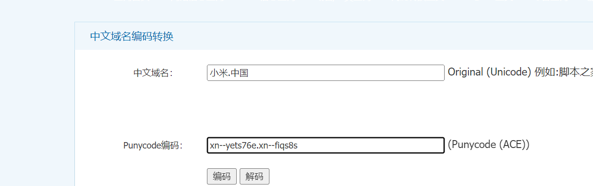
其实，中文后缀的域名可以不编码，主要是中英结合的域名, 比如 http://中万.cn/
从浏览器直接复制过来是http://xn–chq7c.cn/
这是一种叫做：Punycode的编码方式
1 | |
然后加上前缀xn--，就和上面的结果一致了
1 | |
可以看到还是可以查询到的，不过这里如果进入其对应的refer服务器中就查询错误（格式不正确）

不过这里竟然可以直接中文域名查询！！当然whois根服务器也可以

这里附上一个whois查询信息的解释：
1 | |
dig查询
dig（domain information group）是常用的域名查询工具，可以从DNS域名服务器查询主机地址信息，获取到详细的域名信息。这个命令是Bind的一部分，本身并没有在Windows和Linux系统中集成，所以如果我们想要使用该命令就需要先下载相应的软件包。–至于下载方式这里就不说了
这里补充一下对于资源记录(RR)的四个元组的知识：
A记录 IP地址记录,记录一个域名对应的IP地址
AAAA记录 IPv6地址记录，记录一个域名对应的IPv6地址
CNAME记录 别名记录，记录一个主机的别名
MX记录 电子邮件交换记录，记录一个邮件域名对应的IP地址，比如my[at]lijiejie.com
后面的部分lijiejie.com，邮件服务器对应的IP地址NS记录 域名服务器记录 ,记录该域名由哪台域名服务器解析
PTR记录 反向记录，也即从IP地址到域名的一条记录
TXT记录 记录域名的相关文本信息
SOA记录 start of anthorization 开始授权，是一种比较难以理解的记录值，一般二级域名才会有
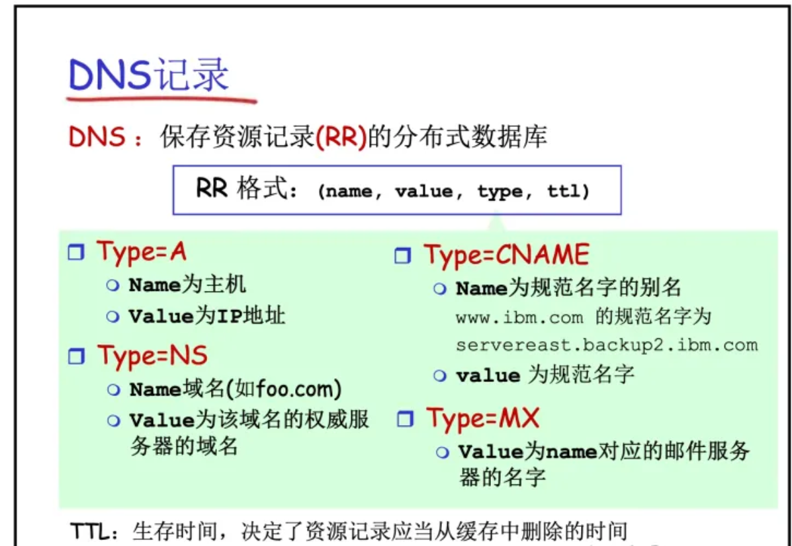
简单使用：dig www.baidu.com
对一些字段的解释：
第一二行：输出了有关dig的版本信息，和全局设置选项：+cmd，以及输入参数信息
Got answer：输出了从DNS返回的技术信息，比较重要的是 status，如果 status 的值为 NOERROR ，则说明本次查询成功。这段信息可以用选项 [no]comments 来控制是否显示，但是小心禁止掉comments也可能关闭一些其它的选项。


QUESTION SECTION：查询字段，显示了我们查询的域名以及查询的服务，A代表的是查询A记录，即主机查询
ANSWER SECTION：回答字段这里的结果表示：要查询www.baidu.com先查询CNAME记录，对www.a.shifen.com进行访问，当我们访问www.a.shifen.com后，该主机让我们访问110.242.68.3，我们访问110.242.68.3后，这个ip的主机会告诉我们www.baidu.com的IP是110.242.68.4

这部分显示了请求所花的时间，dns服务器，当前时间，以及查询信息的大小
还有一个值得记录的是-x选项，说是根据IP反查域名（另外每个命令后面添加+short可以简化输出信息）
1 | |

不过这里始终没看出来域名在哪里。。。。还有一个+trace命令可以看到域名解析详细过程
ICP备案查询
ICP备案是指网站在信息产业部提交网站信息进行官方认可。对国内各大小网站(包括企业及个人站点)的严格审查工作，对于没有合法备案的非经营性网站或没有取得ICP许可证的经营性网站，根据网站性质，将予以罚款，严重的关闭网站，以此规范网络安全，打击一切利用网络资源进行不法活动的犯罪行为。也就是说，只要是盈利为目的的网站，都要进行ICP备案，否则会受到相应的处罚。
国内使用国内服务器的网站，都必须要先办理ICP备案后才可以上线。
通过查询目标企业的备案信息，可直接获取到目标企业注册了哪些域名，从而增加可渗透的目标范围。
推荐使用官方网站ICP/IP地址/域名信息备案管理系统 ——支持使用单位名称、域名和备案号进行查询
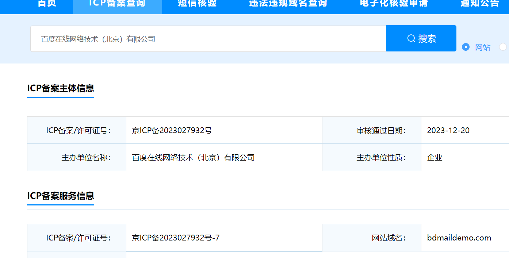
站长工具
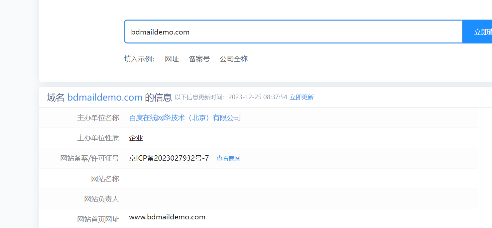
爱站网
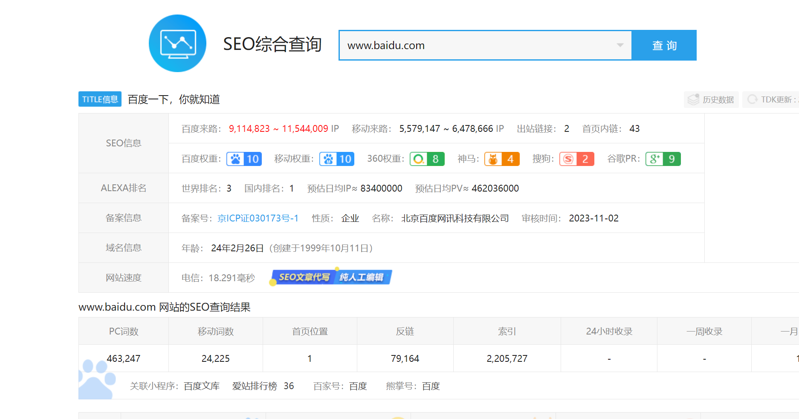
证书查询
SSL证书是一种遵守SSL协议的服务器数字证书，由受信任的根证书颁发机构颁发。 SSL证书采用SSL协议进行通信，SSL证书部署到服务器后，服务器端的访问将启用HTTPS协议。 您的网站将会通过HTTPS加密协议来传输数据，可帮助服务器端和客户端之间建立加密链接，从而保证数据传输的安全。
通过查询共用SSL证书的网站，可以找到相关的其他域名。
第一种可以浏览器直接查看，如下图，点击更多信息
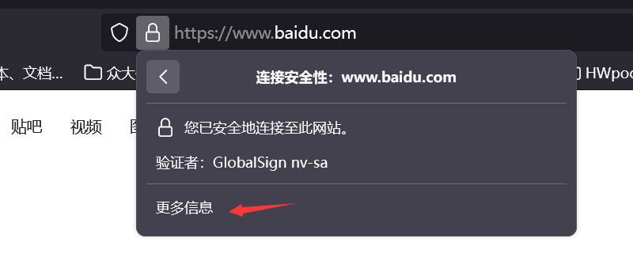
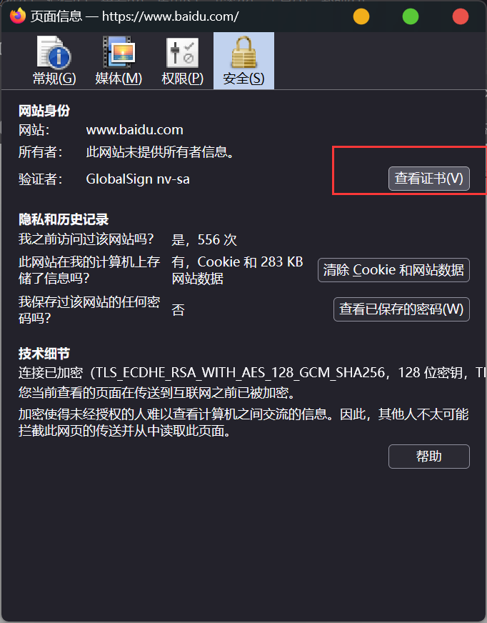
接着点击上图的查看证书即可
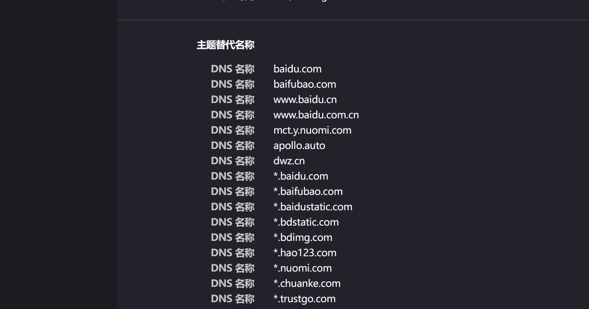
第二种是利用在线网站查询： crt.sh
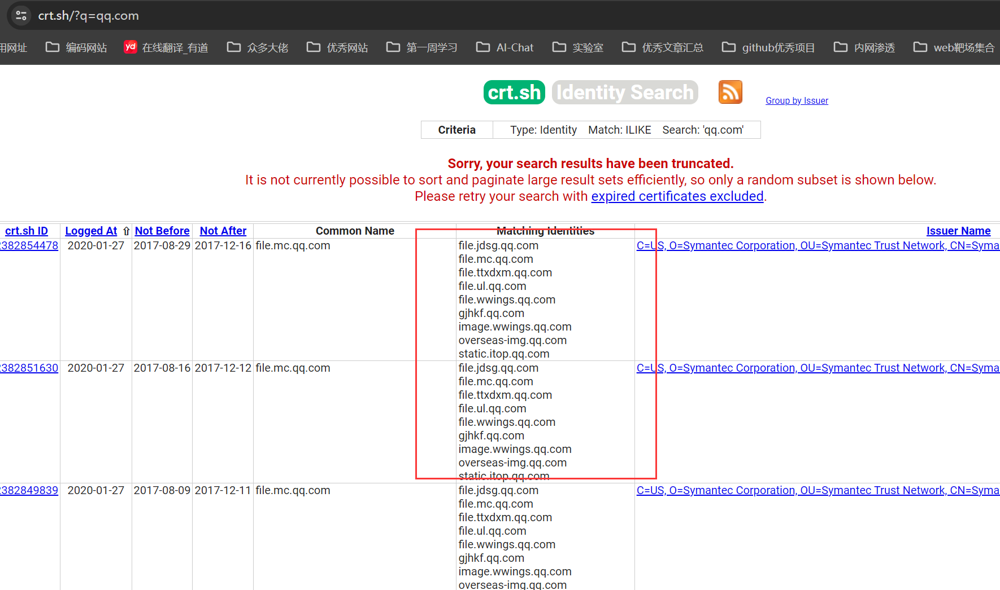
第三种是通过网络空间搜索引擎
可查询fofa语法手册：
| 语法 | 说明 |
|---|---|
cert="baidu" |
搜索证书(https或者imaps等)中带有baidu的资产。 |
cert.subject="Oracle Corporation" |
搜索证书持有者是Oracle Corporation的资产 |
cert.issuer="DigiCert" |
搜索证书颁发者为DigiCert Inc的资产 |
cert.is_valid=true |
验证证书是否有效，true有效，false无效 |
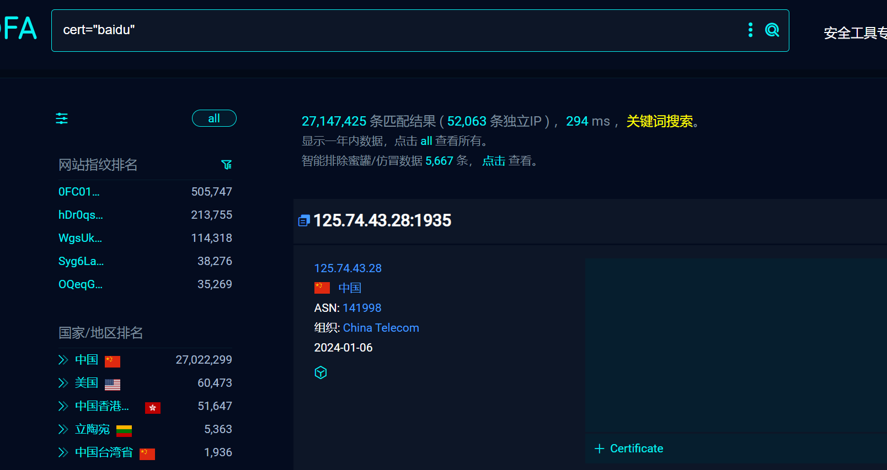
DNS共享记录查询
DNS（Domain Name Server，域名服务器）是进行域名(domain name)和与之相对应的IP地址 (IP address)转换的服务器。DNS中保存了一张域名(domain name)和与之相对应的IP地址 (IP address)的表，以解析消息的域名。 域名是Internet上某一台计算机或计算机组的名称，用于在数据传输时标识计算机的电子方位（有时也指地理位置）。域名是由一串用点分隔的名字组成的，通常包含组织名，而且始终包括两到三个字母的后缀，以指明组织的类型或该域所在的国家或地区。
此处通过查询共享DNS服务器的主机来获取到相关的域名；需要注意的是，如果是公开的DNS服务器，那么查询的效果将会特别差。
首先查询目标是否存在自建的NS服务器
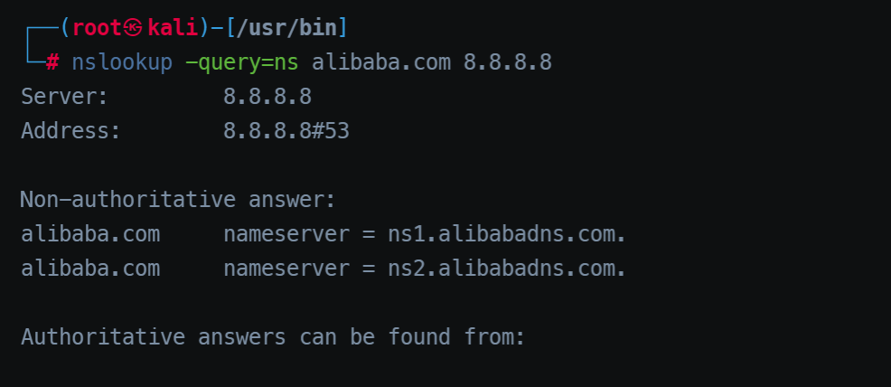
将获取到的NS服务器带入 https://hackertarget.com/find-shared-dns-servers/ 进行查询
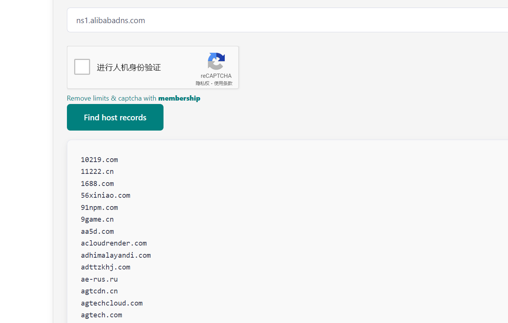
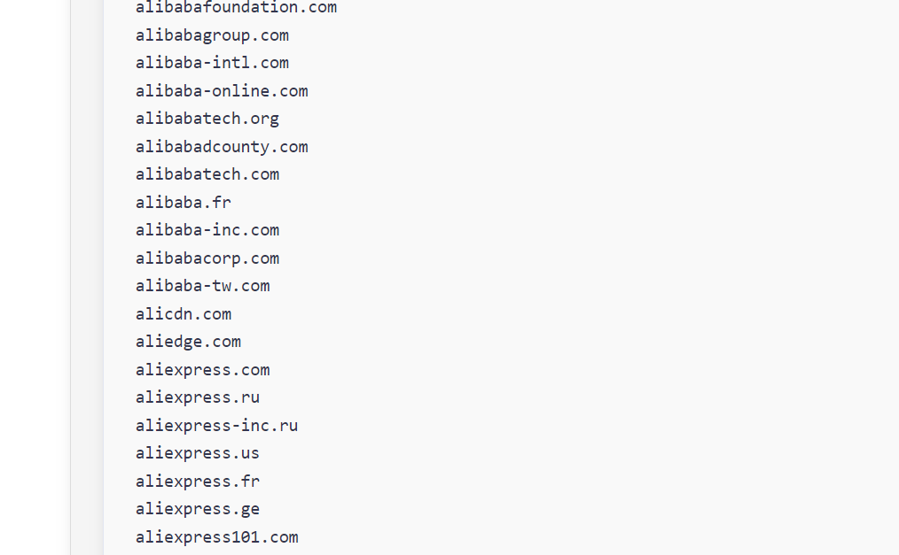
此处查询的结果并不全是属于目标范围，需要进一步的确认和观察。
IP反查
目标多个域名可能绑定在同一IP上，通过IP反查一定情况下可获取到其他的域名信息。
输入相关的域名或IP地址即可查询。
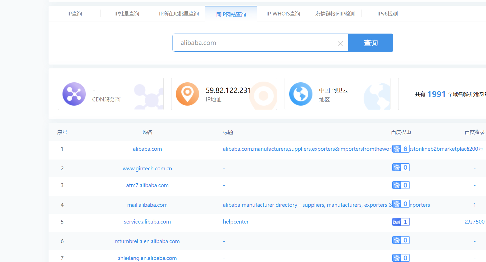
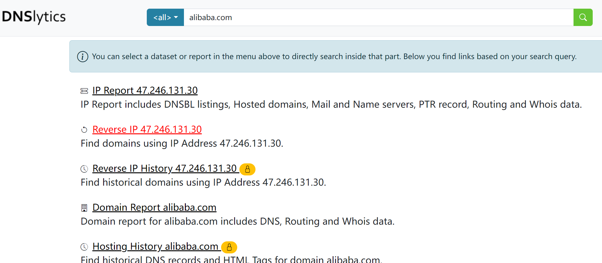
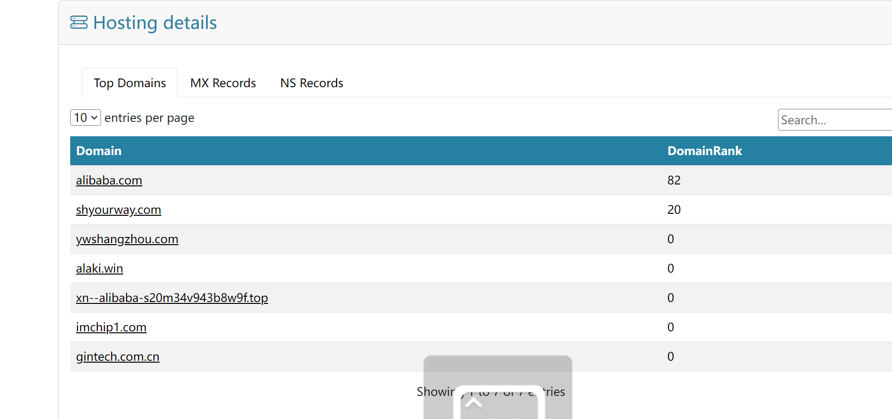
搜索引擎搜索IP反查域名即可，但有时候效果并不理想，很多情况查不到
推荐使用平台：https://securitytrails.com/dns-trails
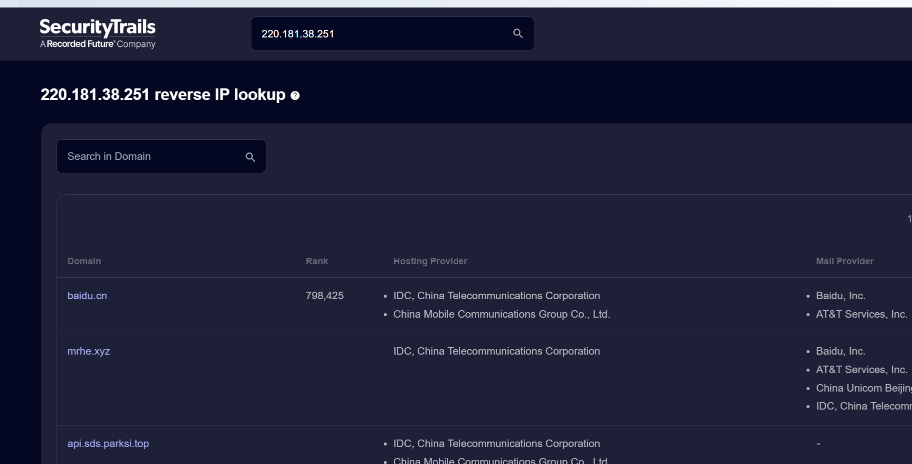
fofa、zoomeye、hunter、quake等，最推荐的还是hunter，效果最好，能查到很多东西
1 | |
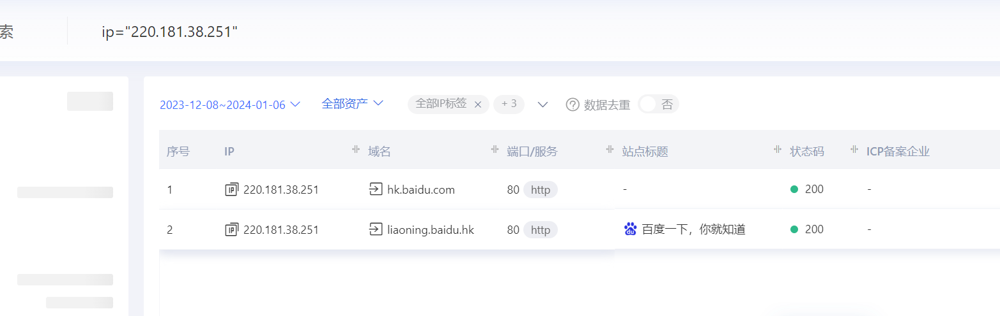
股权信息
通过查询股权信息，或者股权穿透图，寻找子公司和孙公司等，一般对外投资超过50%或者有行政权限的都可以算目标
如查询字节跳动
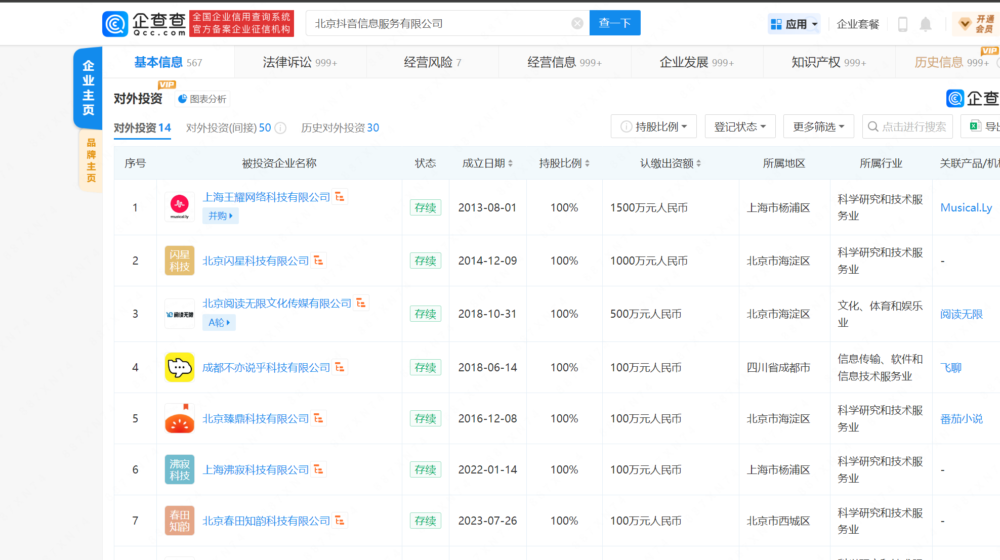
通过查询子公司，再查询子公司对应的产品，可以大范围的扩大攻击面
工具推荐
Hackerone
一些在hackerone上进行众测的厂商，会把自己的测试范围列举出来，其中就包含有大量的域名，因此通过hackerone来完善资产收集也是一个不错的方法。
以阿里为例：https://hackerone.com/alibaba?type=team&view_policy=true
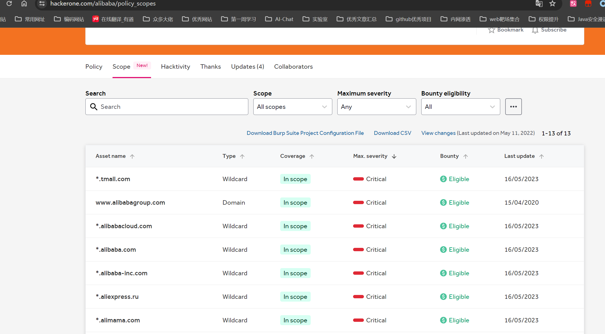
Google直接搜索里面的一些关键内容来查询，比如公司名、备案、引用的特殊js等
还是以阿里为例（别人的成果图）
1 | |
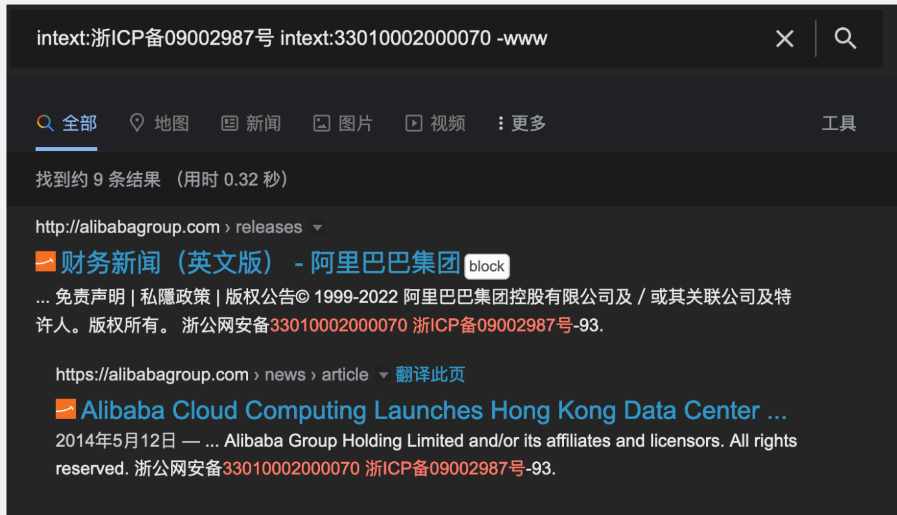
国家企业信用信息公示系统
https://shiming.gsxt.gov.cn/corp-query-search-1.html
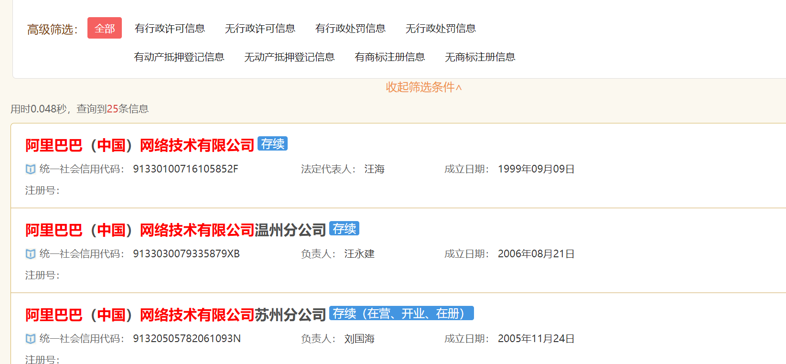
获取真实IP
为了保证网络的稳定和快速传输，网站服务商会在网络的不同位置设置节点服务器，通过 CDN（Content Delivery Network，内容分发网络）技术，将网络请求分发到最优的节点服务器上面。如果网站开启了 CDN 加速，就无法通过网站的域名信息获取真实的 IP，要对目标的 IP 资源进行收集，就要绕过 CDN 查询到其真实的 IP 信息。
一个小tip：浏览器切换手机模式，可能是真实ip，公众号、小程序中的资产也可能对应真实ip。
如何判断是否有CDN
在对目标 IP 信息收集之前，首先要判断目标网站是否开启了 CDN，一般通过不同地方的主机 ping 域名和 nslookup 域名解析两种方法，通过查看返回的 IP 是否是多个的方式来判断网站是否开启了 CDN，如果返回的 IP 信息是多个不同的 IP，那就有可能使用了 CDN 技术。
方法一：多地ping
使用各种多地 ping 的服务，查看对应 IP 地址是否唯一，如果不唯一多半是使用了CDN， 多地 Ping 网站有：

可以到有多个IP，一般这种方法要根据多个网站都进行尝试一下，才能更好的确定，不过这里能用的我知道的只有两个
http://ping.chinaz.com/、http://ping.aizhan.com/而且后者还似乎崩了，查询没反应
又去谷歌找了一番，无果，感觉有需要的话需要多翻翻一些网站了。
方法二：nslookup
试用nslookup进行检测，如果返回域名解析对应多个IP，那么多半是试用了CDN.
1 | |
这里看到一个是有多个IP地址，一个是name的值直接就是cdn.net什么的，这很明显就是有CDN了
方法三：在线工具
在线工具查看是否存在CDN，可以参考以下站点:
这里推荐第二个站点

绕过CDN
查询历史DNS记录
查看 IP 与 域名绑定的历史记录，可能会存在使用 CDN 前的记录，相关查询网站有

- https://censys.io/ipv4?q=baidu.com
- https://github.com/projectdiscovery/cdncheck –未仔细查看
- https://viewdns.info/iphistory/

https://securitytrails.com/ –需要企业邮箱注册，不过很全
SecurityTrails（前身为 DNS Trails）拥有大约3.5万亿DNS记录，3亿whois记录，8亿SSL证书记录以及超过4.5亿子域的记录数据。自2008年以来，网站每天都收集和更新海量数据。
DNS 记录：
IP历史

子域名：

Complete DNS（https://completedns.com/）Complete DNS 拥有超过 22 亿个DNS变更记录，提供API，支持同时进行多域名/IP查询。

WhoISrequest （https://whoisrequest.com/）
WhoISrequest 这个网站自2002年以来一直在跟踪和记录DNS历史变更，数据底蕴很足。
不过这里查了半天没查到什么信息，而且这个网站似乎对于dns历史记录用的是上面的网站的api
Whoxy（https://www.whoxy.com/）
Whoxy 拥有爬取超过 3.65亿个子域数据，该网站 API 调用非常方便，以 XML 和 JSON 格式返回数据。
还有很多网站，这里就不一一介绍了，详细可浏览参考文章，这里汇总一下
- http://www.cdnplanet.com/tools/cdnfinder
- http://www.ipip.net/ip.html
- https://x.threatbook.cn/
- https://censys.io/ipv4?q=baidu.com
- https://github.com/projectdiscovery/cdncheck
- https://viewdns.info/iphistory/
- https://securitytrails.com/
- https://completedns.com/
- https://whoisrequest.com/
- https://www.whoxy.com/
- https://dnsdb.io/
- https://reverse-ip.whoisxmlapi.com/
使用国外主机请求域名
部分国内的 CDN 加速服务商只对国内的线路做了 CDN 加速，但是国外的线路没有做加速，这样就可以通过国外的主机来探测真实的 IP 信息。
探测的方式也有两种，可以利用已有的国外主机直接进行探测；如果没有国外主机，可以利用公开的多地 ping 服务（多地 ping 服务有国外的探测节点），可以利用国外的探测节点返回的信息来判断真实的 IP 信息。
网站信息泄露漏洞
- 服务器日志文件
- 探针文件，例如 phpinfo
- 网站备份压缩文件
- .DS_Store
- .hg
- .git
- SVN
- Web.xml
字典非常重要，往往疏忽的点就在一台边缘服务器。
小tip：phpinfo 页面中有一个 SERVER_ADDR 字段会显示该主机真实 IP。
查询子域名
这里注意的就是子域名、C段以及旁站（同IP网站）
由于 CDN 加速需要支付一定的费用，很多网站只对主站做了 CDN 加速，子域名没有做 CDN 加速，子域名可能跟主站在同一个服务器或者同一个 C 段网络中，可以通过子域名探测的方式，收集目标的子域名信息，通过查询子域名的 IP 信息来辅助判断主站的真实 IP 信息。 ———具体的方法在下面叙述
邮件信息
一般大型网站自己部署架设的邮件服务器如果向外部用户发送邮件的话，如果中间未经任何数据处理和防护措施，那么邮件头部的源码中会包含此邮件服务器的真实 IP 地址。常见的邮件触发点有：
- RSS 订阅
- 邮箱注册、激活处
- 邮箱找回密码处
- 产品更新的邮件推送
- 某业务执行后发送的邮件通知
- 员工邮箱、邮件管理平台等入口处的忘记密码

另外这里还有一个奇淫技巧，通过发送邮件给一个不存在的邮箱地址，比如 000xxx@domain.com ，因为该用户不存在，所以发送将失败，并且还会收到一个包含发送该电子邮件给你的服务器的真实 IP 通知。
生产上多关注这些点，一个不成功继续测试下一个邮件触发点，很多大型网站的邮件服务器不止一台，并不是所有都做了防护处理，细节决定成败。
目标网站 APP 应用
如果目标网站有自己的 App，可以尝试利用 Burp Suite 等流量抓包工具抓取 App 的请求，从里面可能会找到目标的真实 IP。
子域名查询
这里除了常见的网络空间如fofa、shodan、zoomeye、censys等，就是一些强大脚本工具了。这里熟悉几个常见的
SubDomainsBrute
项目地址：https://github.com/lijiejie/subDomainsBrute
SubDomainsBrute 是通过纯 DNS 爆破来寻找子域名，为了最大提升脚本效率，采用协程+多进程的方式进行爆破。Python 3.5 以上需要安装 aiodns 库进行异步查询，python 2 需要安装 dnspython 库和 gevent 协程库。
1 | |
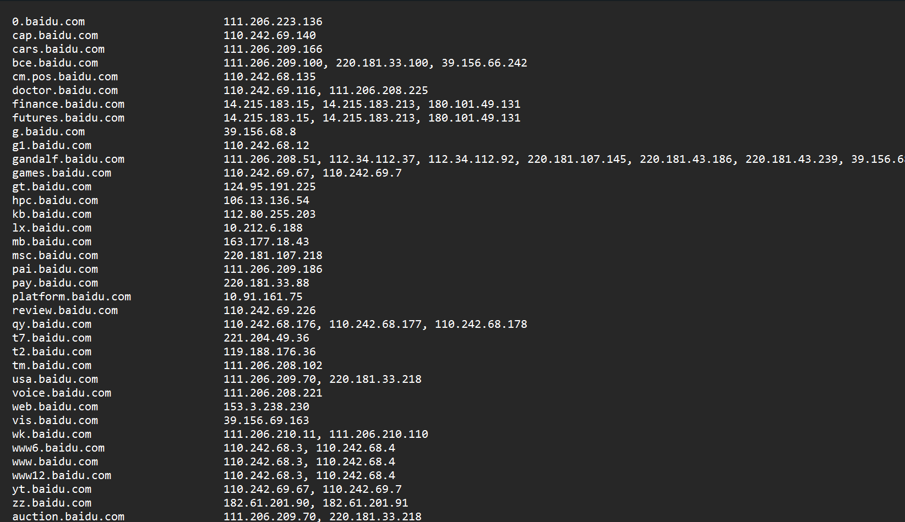
且在最近更新之后是支持扫描泛解析域名的，使用 -w 参数。——这里简单了解了一下域名泛解析。
简单来说就是DNS的泛域名解析也可以理解为带通配符的解析记录，带通配符的解析记录是用来为不存在的子域提供解析请求响应的方法。 例如存在一个example.com，如果我们设置通配符记录：*.example.com，则对其不存在的所有子域，比如abcd.example.com、xxx.example.com（这些都是不存在的子域），则如果我们在对这些子域进行请求的时候，都会自动指向example.com。
因此基于上述原理，如果我们的目标域名设置了这样的泛解析，那我们可以凭借强大的字典对其任意子域进行请求，看最终返回的ip是否与其主域IP一致，如果一致那说明该子域不存在；但如果不一致，说明该子域是存在的。
当然如果目标域名没有设置泛解析，那我们在对其子域进行请求的时候，如果返回了与主域IP地址不同的情况，则直接说明该子域存在
我们针对一个泛解析的域名进行爆破，subDomainsBrute 会提示 any-sub 错误，之后使用 -w 参数开启泛解析强制爆破
ESD
项目地址：https://github.com/FeeiCN/ESD –具体的就不介绍了，看一下使用效果即可，这里扫描单个域名看看
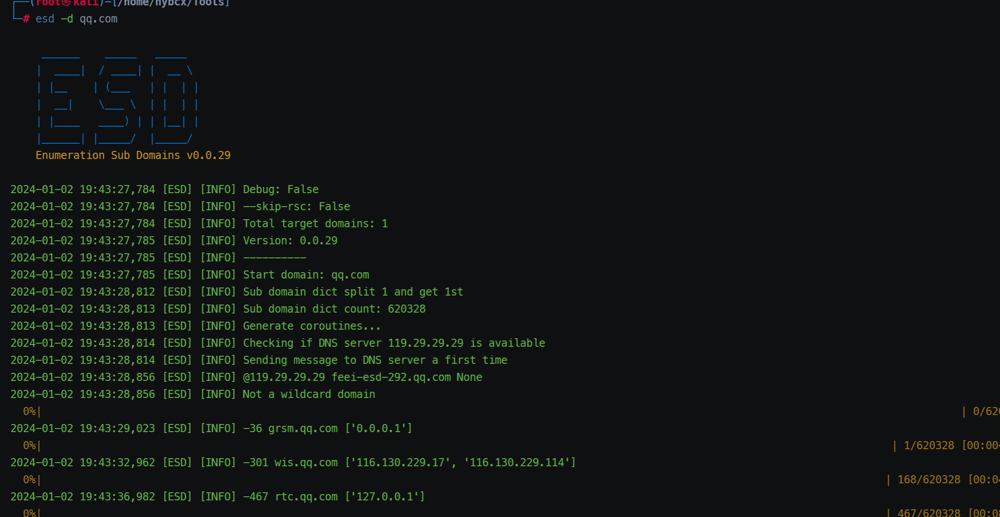
就是速度有点慢
1 | |
Layer 子域名挖掘机
项目地址：https://hub.fastgit.org/euphrat1ca/LayerDomainFinder/releases/tag/3
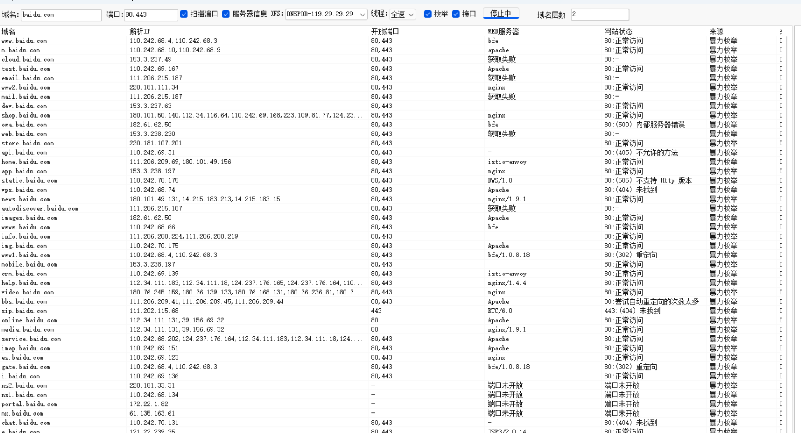
Xray
项目地址：https://github.com/chaitin/xray
xray 是一款强大的安全评估工具，一款自动化扫描器，我们可以用其自带的 subdomain 子域名发掘功能来针对性探测：
subdomain 功能支持暴力破解模式和非暴力模式，可以只探测 web 服务或者只探测 ip 可解析的子域，另外支持 webhook 数据传递，作为插件端或者分发消息的接收端来使用都非常方便快捷。
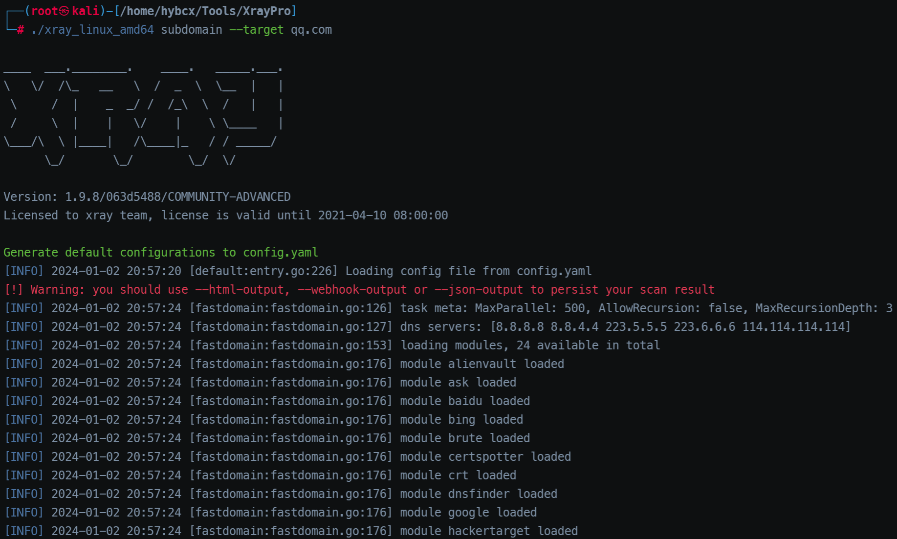
Bypass-firewalls-by-DNS-history
项目地址：https://github.com/vincentcox/bypass-firewalls-by-DNS-history
Bypass-firewalls-by-DNS-history 是一款集成全自动化的探测工具，通过探测 DNS 历史记录，搜索旧的 DNS A Record，收集子域，并检查服务器是否对该域名进行答复。 另外它还基于源服务器和防火墙在HTML响应中的相似性阈值来判断。
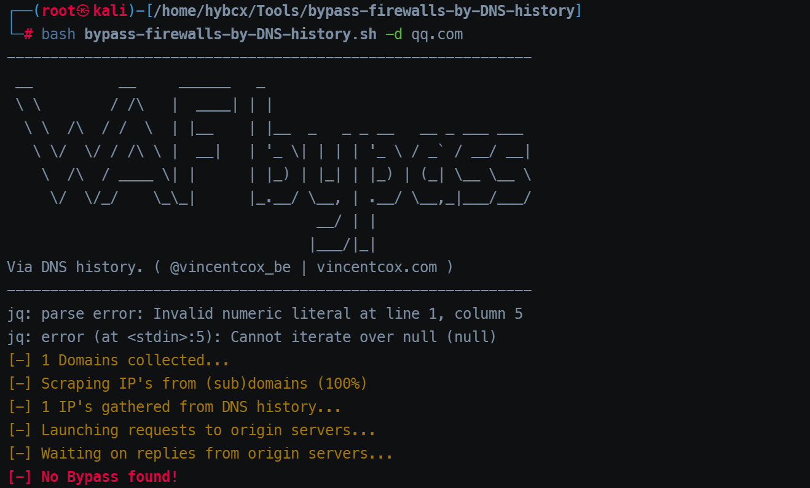
OneForAll
项目地址：https://github.com/shmilylty/OneForAll
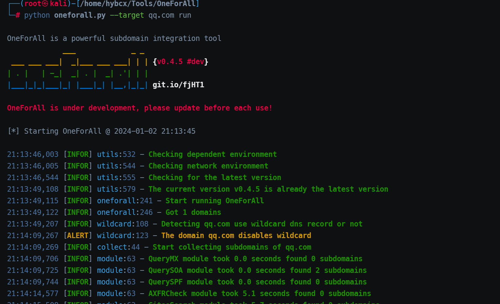
搜索引擎发现子域名
使用搜索引擎语法，如Google 或者百度等
1 | |
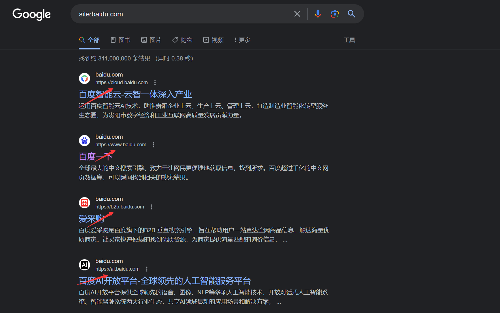
第三方聚合服务发现子域名
第三方聚合平台 Netcraft、Virustotal、ThreatCrowd、DNSdumpster 和 ReverseDNS 等获取子域信息。
通过 SSL 证书
- 证书颁发机构 (CA) 必须将他们发布的每个 SSL/TLS 证书发布到公共日志中，SSL/TLS 证书通常包含域名、子域名和电子邮件地址。因此可以利用 SSL/TLS 证书来发现目标站点的真实 IP 地址。
- CDN 运营商在给服务器提供保护的同时，也会与其服务器进行加密通信（ssl），这时当服务器的 443 端口接入域名时也会在 443 端口暴露其证书，我们通过证书比对便可发现网站的真实 IP 地址。
- 利用 Censys 引擎（https://censys.io/）
- Censys 搜索引擎能够扫描整个互联网，每天都会扫描 IPv4 地址空间，以搜索所有联网设备并收集相关的信息，可以利用 Censys 进行全网方面的 SSL 证书搜索，找到匹配的真实 IP 。
可以看到，当我们针对一个互联网 IP 地址进行搜索时，是有匹配到证书 sha1 签名的
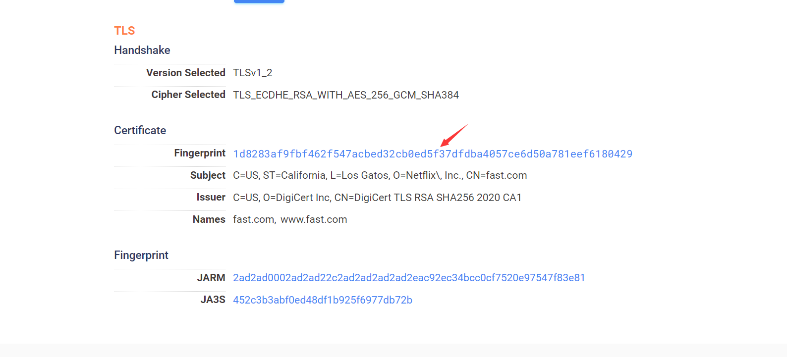
同理，我们根据域名指纹搜索 SSL 证书指纹，然后再反查 IP 就可以了。
首先针对目标域名，选择 Certificates 证书搜索，结果出来一堆 有效 的证书和 无效 的证书：
我们在搜索的时候可以使用语法来先检索有效证书，如果无果再回去查看无效证书
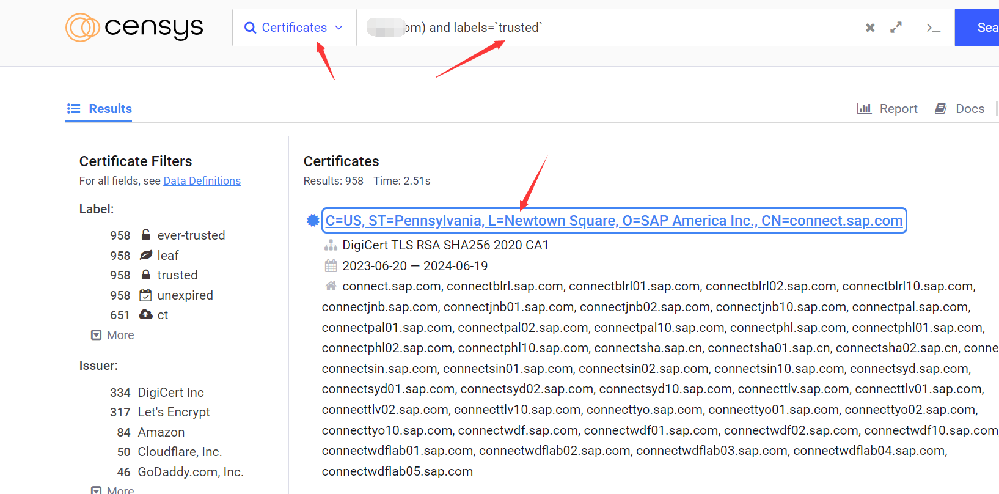
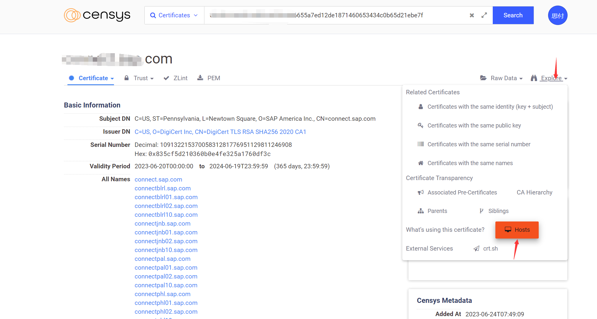
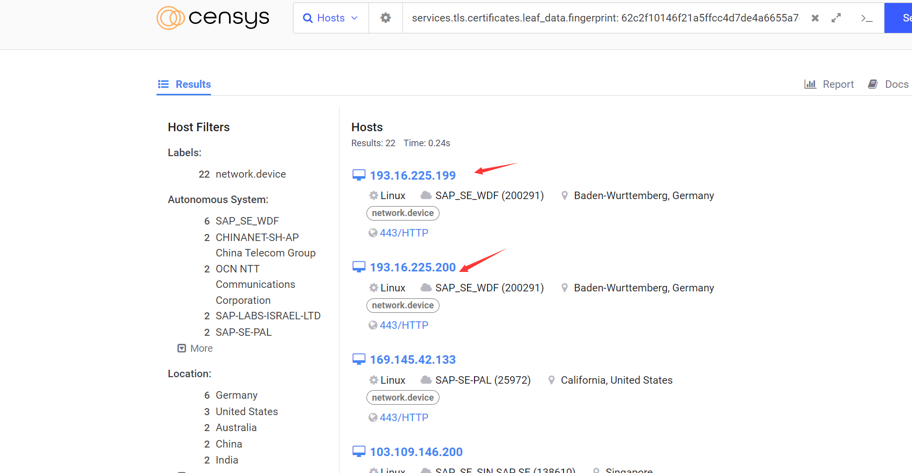
使用命令行
- 通过
openssl和curl等常见的基础命令，也同样可以达到反查 SSL 证书的效果。
openssl：附上成果图
1 | |
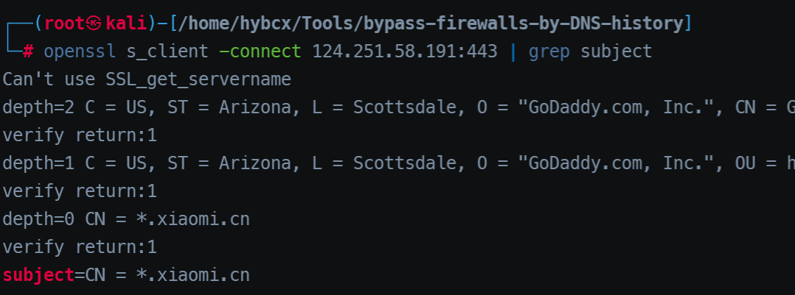
curl：
1 | |
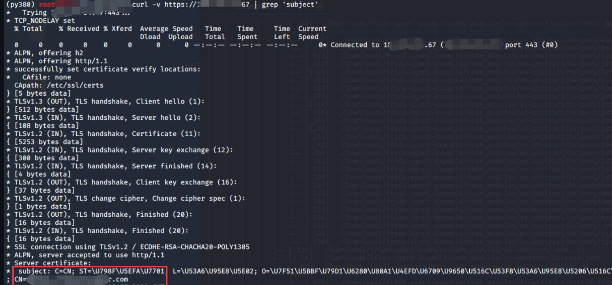
使用工具和脚本
- 通过自己写工具脚本，集成前面的1、2两点，完全可以做到一个简易版的 SSL 全网证书爬取，也可以利用现有的一些脚本工具和网站，省的我们自己费力了。
例如 CloudFlair ，项目地址：https://github.com/christophetd/CloudFlair
脚本兼容 python2.7 和 3.5，需要配置 Censys API，不过只针对目标网站是否使用 CloudFlare 服务进行探测。
证书收集
可以通过 https://crt.sh 进行快速证书查询收集
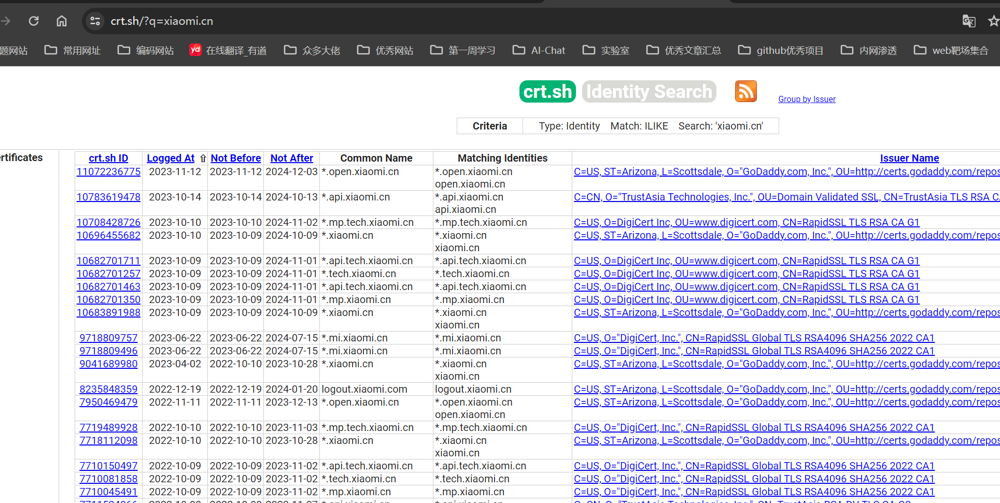
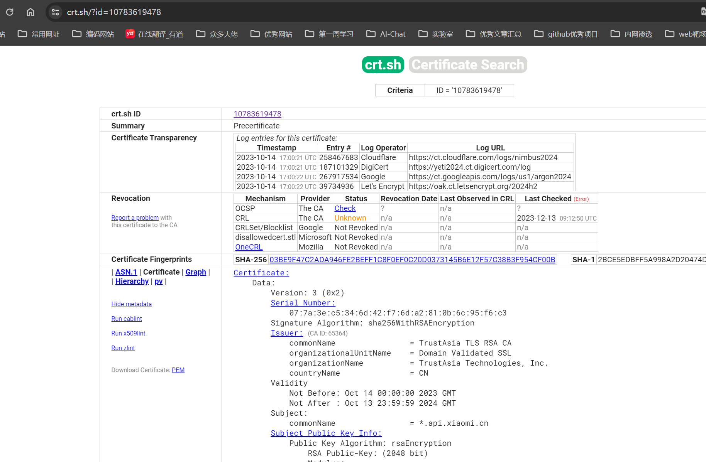
附上查询的 python 小脚本：
1 | |
获得所有包含证书的子域：
通过海外 DNS 查询
- 针对国内市场用户，大部分的 CDN 服务商并没有做海外市场的 CDN ，所以可以通过寻找小众、冷门的海外 DNS 查询，看是否能获得真实 IP 。
1 | |
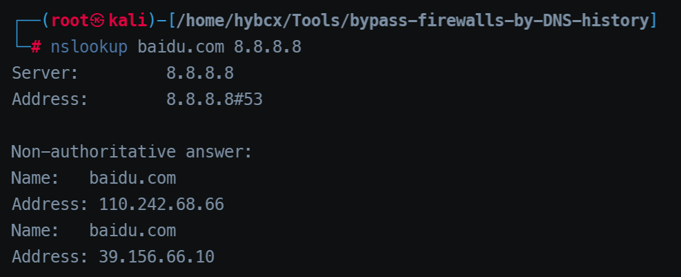
也可以使用海外的超级ping类的平台在线多国家多地区测试，推荐 https://www.host-tracker.com/v3/check/ ，支持 140 多个地区的 ping 测试，另外支持针对某子域超长期的监控，通过邮件通知，简直太强大了。——就是需要氪金
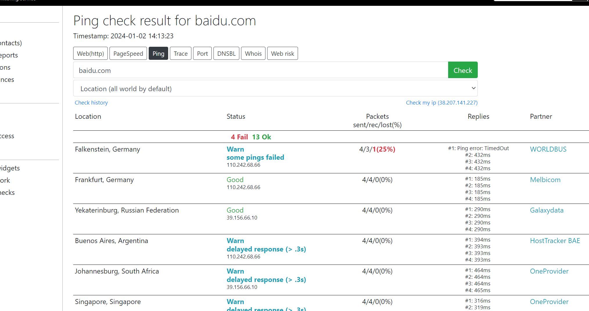
小技巧：在https://github.com/ 上也可以搜索子域名，运气好的话，会有意想不到的收获。
通过变更的域名
- 很多网站在发展的过程中，会更换域名，比如京东以前的域名是 360buy.com ，后来斥巨资购买了 jd.com 。
- 网站在更换新域名时，如果将 CDN 部署到新的域名上，而之前的域名由于没过期，可能未使用 CDN，因此可以直接获得服务器 IP，所以，历史域名也是一个很重要的点。
通过 APP 移动端应用
- 如果网站存在 APP ，可以通过抓包分析其 APP 的数据流量，看是否能找到网站真实 IP 地址，记得关注 APP 的历史版本，里面会有很多 surprise 。
通过 F5 LTM 解码
- LTM 是将所有的应用请求分配到多个节点服务器上。提高业务的处理能力，也就是负载均衡。
- 当服务器使用 F5 LTM 做负载均衡时，通过对
set-cookie关键字的解码，可以获取服务器真实 ip 地址。
例如：
1 | |
- 先把第一小节的十进制数，即 605532106 取出来
- 将其转为十六进制数 2417afca
- 接着从后至前，取四个字节出来： CA AF 17 24
- 最后依次转为十进制数 202.175.23.36，即是服务器的真实 ip 地址。
通过全网扫描
- 首先从 apnic 网络信息中心 或 IPdeny 获取目标地区 ip 段。
- 接着使用 Zmap、masscan 等工具对扫描出来端口开放的主机进行 banner 爬取。
- 然后在 http-req 的 Host 字段，写入我们需要寻找的子域。
- 最后过滤特征，确认是否有对应的服务器响应。
- 如果端口不是常见或者固定，当场退役。
缺陷：实际上，全网扫描的方法十分笨重，不推荐。因为已经有很多的网站给我们提供了全网爬取服务，之前的方法里都有介绍到，何必自己全网扫描呢，受限于网络、受限于设备，你个人爬的数据也不会有人家商业爬的全
通过 virtual-host 碰撞
- 当我们收集了目标足够多的可能的真实 IP 时，可以通过 IP 和子域的碰撞，来批量获得命中目标以及目标哪些的子域。
这里对于我这个小白还不懂什么是host碰撞，那我们先来了解一下：
什么是HOSTS碰撞：
当直接访问IP回显4xx错误，直接指定HOST头为某个域名时访问该IP回显正常时，可判断可进行HOSTS碰撞。
当一些域名只允许在内网访问时，可通过这种碰撞直接突破边界限制，访问到内网系统进行下一步渗透测试。
比如如果此时对方的网站对应的中间件有如下配置
1 | |
第一个server的意思是，监听80端口，且如果我们访问的servername不是其他server块儿（也就是这里的第二个）配置的servername，那就返回400。这里我们第二个server块儿设置了servername为指定域名，也就是如果我们在访问该网站的时候不是用指定域名访问的，就会返回400（也就是禁用IP访问了）。这里我结合那些文章举个例子吧：
比如我们此时对目标网站进行信息搜集之后，有了大量的IP资产，并且这些IP资产也开启了web端口，但当我们使用IP直接访问的时候会发现总是返回400、403、404等等。这基本就是对方的中间件使用了反向代理，禁用了IP访问。此时呢，对方网站设置的是：只能使用内网域名来访问该网站。
而对于处于外网的我们来讲，如果我们找到了该IP对应的真正域名，此时我们去访问该域名的时候也是行不通的，因为他是内网域名，而我们在访问的时候，会去公网DNS服务器去寻求域名对应解析出来的IP，但很明显是找不到的。
只有我们在本地hosts文件中设置IP->正确域名的解析关系，这时我们再去访问的时候就可以成功访问目标内网系统。因为本地hosts的IP解析优先级高于公共的DNS服务器。
具体可参考：边界渗透中的小技巧-Hosts碰撞 、利用HOSTS碰撞突破边界、Host碰撞环境搭建原理及复现
回到正题，那我们在遇到类似情况就可以使用自动化工具来快速明确IP与域名的正确绑定关系：
自动化的过程可以使用 virtual-host-discovery 工具，项目地址：https://github.com/jobertabma/virtual-host-discovery
使用方法：
1 | |
其中wordlsit 参数可以省略，默认有一个字典加载，使用该参数则是指定我们自己想要跑的子域列表。
执行后，即可快速找出命中 IP 的子域，这里放上一个成果图（未实践）

另外可以通过 find-virtual-hosts （https://pentest-tools.com/information-gathering/find-virtual-hosts#）工具来在线快速针对全网数据扫描比对得出结果：
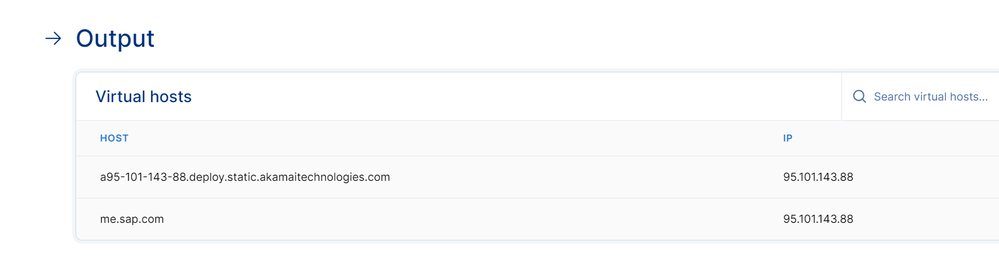
通过 favicon.ico 哈希特征
- favicon.ico 是现代浏览器在网页标题的左侧显示的一个小图标。
- 该图标数据通常是从 https://anywebsite/favicon.ico 处获取的，浏览器会在浏览任何网站时自动请求它。
- 因为可以通过计算 favicon.ico 的指纹哈希，然后去 shodan 等搜索引擎搜索与之相同的主机结果，从而进一步探测是否能挖掘出目标网站的真实 IP 地址。
计算 favicon.ico 哈希的小脚本：
python 2
1 | |
python 3
1 | |
安装好环境依赖后执行脚本，计算得到目标网站的 favicon.ico 哈希值：
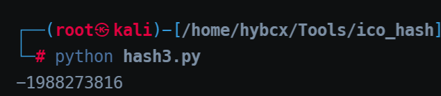
然后用 shodan 搜索引擎搜索哈希，去命中 IP：
1 | |

这里不知为何访问总是被禁，但在网站上还是可以正常访问的。。。。
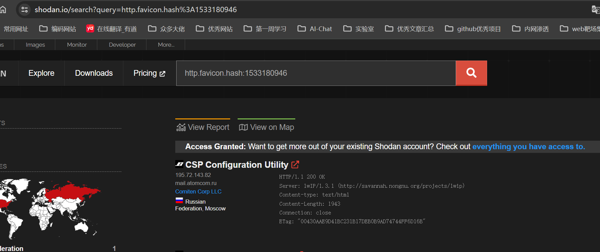
感觉是api-key的问题，但也没解决，先放着吧。。。
通过网页源码特征值
- 在服务器源 IP 地址允许访问并且返回的也是类似的网站内容情况下，可以通过侦察页面源码中 JS 、CSS 、HTML 等一系列静态特征值，然后用 Shodan 、Zoomeye 、Censys 等搜索引擎进行匹配搜索，从而定位 IP 。
例如源码中找到一段 Google Analytics 的 JS 特征：
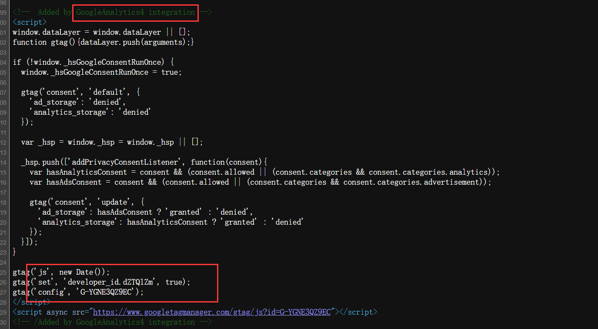
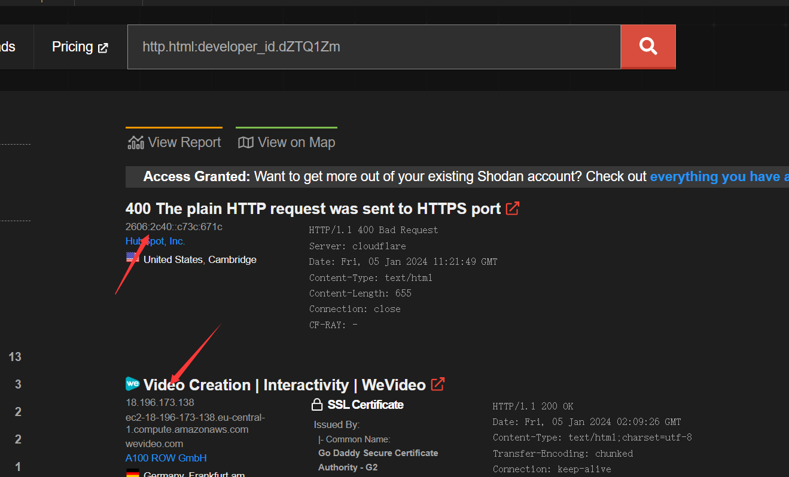
这里我的找的特征值也不够有特色，可以看到回显的
使用 CloudFair 工具
- 如果你的目标是 CloudFlare 保护的，建议先上这款工具跑。
- CloudFail 是一种战术侦察工具，旨在收集有关受 Cloudflare 保护的目标的足够信息，以期发现服务器的 IP 位置。
该工具目前探测经过3个不同的攻击阶段：
1.使用 DNSDumpster.com 扫描 DNS 配置错误。 2.扫描和比对 Crimeflare.com 数据库。 3.内置字典暴力扫描超过11000个子域名。
安装和使用：
1 | |
DNS 域传送发现子域名
DNS 服务器分为：主服务器、备份服务器和缓存服务器。在主备服务器之间同步数据库，需要使用 “DNS 域传送”。域传送是指备份服务器从主服务器拷贝数据，并用得到的数据更新自身数据库。
若 DNS 服务器配置不当，可能导致攻击者获取某个域的所有记录。造成整个网络的拓扑结构泄露给潜在的攻击者，包括一些安全性较低的内部主机，如测试服务器。同时，黑客可以快速的判定出某个特定 zone 的所有主机，收集域信息，选择攻击目标，找出未使用的 IP 地址，绕过基于网络的访问控制。目前来看 “DNS 域传送漏洞” 已经很少了。
利用 nmap 漏洞检测脚本 dns-zone-transfer 进行检测
1 | |
Linux dig命令进行测试
1 | |
最后记几个未能实践但却值得记录的几个方法（万一日后用上呢）
- 通过 CDN 标头特征值–censys搜索
- 通过 XML-RPC PINGBACK 通信 ——似乎是针对支持 WordPress 的网站的方法
- 通过 FTP/SCP 协议
- 利用 Websocket 协议——针对那些没有针对websocket进行部署的网站
- 社会工程学——社工的魅力
- 通过全网扫描
- 通过网站远程资源业务 ——注入我们自己的服务器资源文件，看http日志
- 通过CDN机器 ——对于自搭建CDN的网站，我们可以尝试渗透一些防护弱的CDN机器
- 通过流量耗尽、流量放大攻击 ——利用CDN流量有限的特点来进行ddos
- 通过域名备案信息广域探测——尝试寻找没有做CDN的边缘子域
- 利用CDN 服务商默认配置 ——CloudFlare ，默认配置 direct.domain.com 二级子域指向服务器源 IP
IP段的收集
一般IP的话，我们在收集子域名的时候，就大概知道目标网站的IP段了。
也可以通过whois命令获取。即通过中国互联网信息中心http://ipwhois.cnnic.net.cn/进行查询：
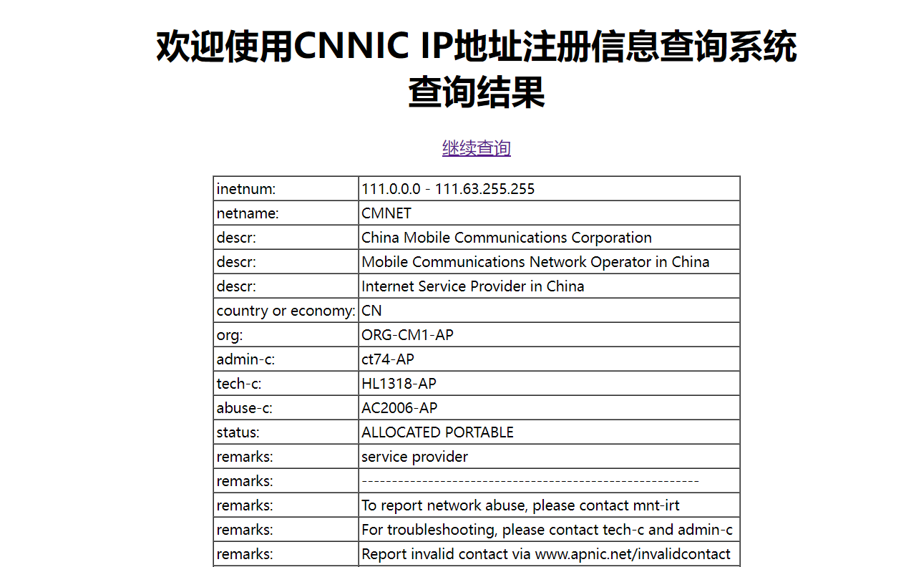
C段与旁站查询
C 段：是指与目标服务器在同一 C 段网络的服务器。攻击目标的 C 段存活主机是信息收集的重要步骤，很多企业的内部服务器可能都会在一个 C 段网络中。在很难找到攻击目标服务器互联网漏洞的情况下，可以通过攻击 C 段主机，获取对 C 段主机的控制权，进入企业内网，在企业的内网安全隔离及安全防护不如互联网防护健全的情况下，可以通过 C 段的主机进行内网渗透，这样就可以绕过互联网的防护，对目标进行攻击。但是这种攻击方式容易打偏。
旁站：是和目标网站在同一台服务器上的其它的网站。
Nmap扫描
使用命令 nmap -sn x.x.x.x/24，对目标 IP 的 C 段主机进行存活扫描，根据扫描的结果可以判断目标 IP 的 C 段还有哪些主机存活。
nmap -Pn 这个命令在实际工作中的使用很多，该命令不通过 ICMP 协议进行主机存活判断，会直接对端口进行扫描。这样在开启了防火墙禁 Ping 的情况下，也可以利用这个命令正常扫描目标是否存活及对外开启的相关服务。
搜索引擎语法
1 | |
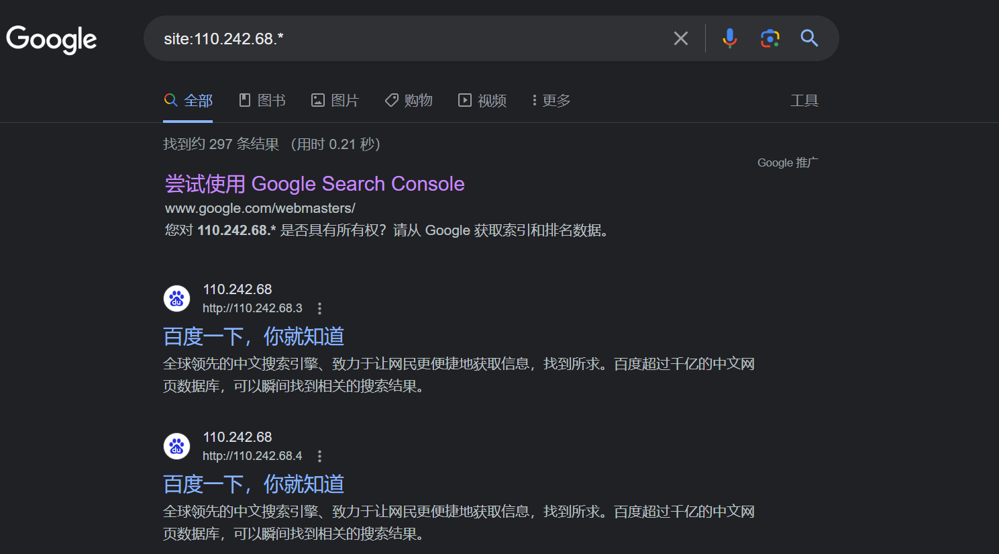
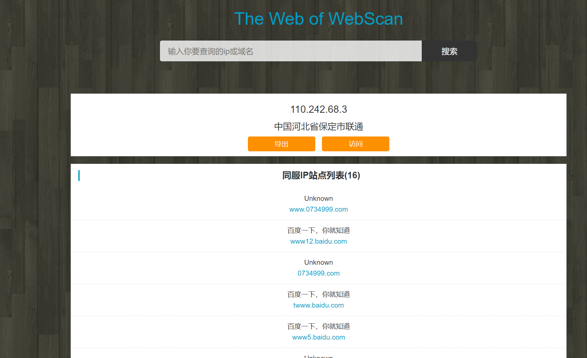
nmap扫描
1 | |

这里一共是扫描出256的存活的ip。
httpscan
项目地址： https://github.com/zer0h/httpscan
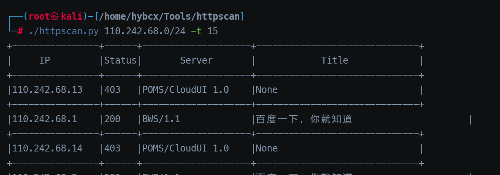
bufferfly
项目地址：https://github.com/dr0op/bufferfly
攻防资产处理小工具，对攻防前的信息搜集到的大批量资产/域名进行存活检测、获取标题头、语料提取、常见web端口检测、简单中间识别，去重等，便于筛选有价值资产。——下面附上一个成果展示图：
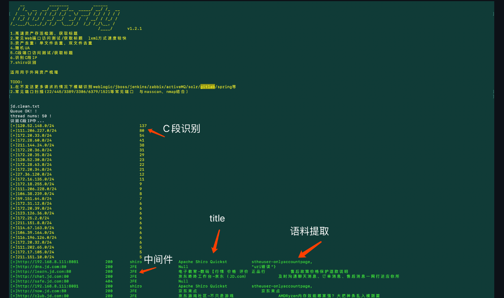
cscan
项目地址：https://github.com/z1un/cscan
与httpscan很像，不过这是py3的，但效果感觉不如http
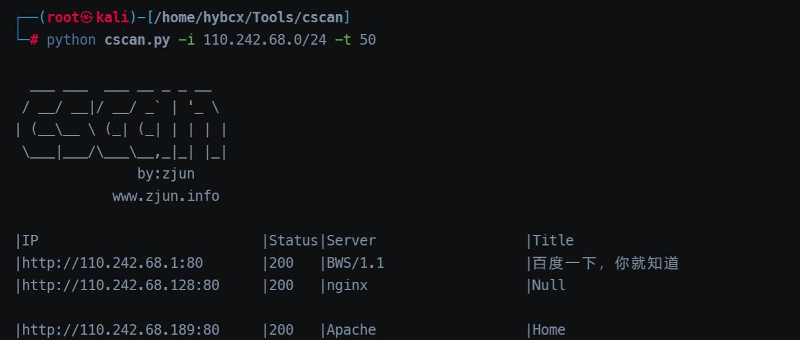
masscan
项目地址：https://github.com/robertdavidgraham/masscan
与nmap类似，一个强大的端口扫描工具。优势在于速度快，缺点是误报率也高
fscan
项目地址：https://github.com/shadow1ng/fscan ——扫描速度快，支持漏洞验证
一款内网综合扫描工具，方便一键自动化、全方位漏扫扫描。
支持主机存活探测、端口扫描、常见服务的爆破、ms17010、redis批量写公钥、计划任务反弹shell、读取win网卡信息、web指纹识别、web漏洞扫描、netbios探测、域控识别等功能。
shuize
项目地址：https://github.com/0x727/ShuiZe_0x727
水泽自带资产探活、支持漏洞验证、Host碰撞
ALLiN
项目地址：https://github.com/P1-Team/AlliN
一个辅助平常渗透测试项目或者攻防项目快速打点的综合工具，由之前写的工具AG3改名而来。是一款轻便、小巧、快速、全面的扫描工具。多用于渗透前资产收集和渗透后内网横向渗透。工具从项目上迭代了一些懒人功能（比如提供扫描资产文件中，可以写绝大部分的各种形式的链接/CIDR,并在此基础上可以添加任意端口和路径）
红队信息搜集工具，被动识别访问站点是否是云上站点
1 | |
Ehole
项目地址：https://github.com/EdgeSecurityTeam/EHole
EHole是一款对资产中重点系统指纹识别的工具，在红队作战中，信息收集是必不可少的环节，如何才能从大量的资产中提取有用的系统(如OA、VPN、Weblogic…)。EHole旨在帮助红队人员在信息收集期间能够快速从C段、大量杂乱的资产中精准定位到易被攻击的系统，从而实施进一步攻击。
开放端口探测
收集到大量IP，那就要进行端口扫描了，看看有什么常见的漏洞。
最常用的就是神器Nmap了。命令：nmap -T4 -sT -p -sV ip
1 | |
其次可能还会用到 masscan，常见端口及对应服务表：
| 端口 | 服务 | 渗透用途 |
|---|---|---|
| tcp 20,21 | FTP | 允许匿名的上传下载,爆破,嗅探,win提权,远程执行(proftpd 1.3.5),各类后门(proftpd,vsftp 2.3.4) |
| tcp 22 | SSH | 可根据已搜集到的信息尝试爆破,v1版本可中间人,ssh隧道及内网代理转发,文件传输等等 |
| tcp 23 | Telnet | 爆破,嗅探,一般常用于路由,交换登陆,可尝试弱口令 |
| tcp 25 | SMTP | 邮件伪造,vrfy/expn查询邮件用户信息,可使用smtp-user-enum工具来自动跑 |
| tcp/udp 53 | DNS | 允许区域传送,dns劫持,缓存投毒,欺骗以及各种基于dns隧道的远控 |
| tcp/udp 69 | TFTP | 尝试下载目标及其的各类重要配置文件 |
| tcp 80-89,443,8440-8450,8080-8089 | 各种常用的Web服务端口 | 可尝试经典的topn,vpn,owa,webmail,目标oa,各类Java控制台,各类服务器Web管理面板,各类Web中间件漏洞利用,各类Web框架漏洞利用等等…… |
| tcp 110 | POP3 | 可尝试爆破,嗅探 |
| tcp 111,2049 | NFS | 权限配置不当 |
| tcp 137,139,445 | Samba | 可尝试爆破以及smb自身的各种远程执行类漏洞利用,如,ms08-067,ms17-010,嗅探等…… |
| tcp 143 | IMAP | 可尝试爆破 |
| udp 161 | SNMP | 爆破默认团队字符串,搜集目标内网信息 |
| tcp 389 | LDAP | ldap注入,允许匿名访问,弱口令 |
| tcp 512,513,514 | Linux rexec | 可爆破,rlogin登陆 |
| tcp 873 | Rsync | 匿名访问,文件上传 |
| tcp 1194 | OpenVPN | 想办法钓VPN账号,进内网 |
| tcp 1352 | Lotus | 弱口令,信息泄漏,爆破 |
| tcp 1433 | SQL Server | 注入,提权,sa弱口令,爆破 |
| tcp 1521 | Oracle | tns爆破,注入,弹shell… |
| tcp 1500 | ISPmanager | 弱口令 |
| tcp 1723 | PPTP | 爆破,想办法钓VPN账号,进内网 |
| tcp 2082,2083 | cPanel | 弱口令 |
| tcp 2181 | ZooKeeper | 未授权访问 |
| tcp 2601,2604 | Zebra | 默认密码zerbra |
| tcp 3128 | Squid | 弱口令 |
| tcp 3312,3311 | kangle | 弱口令 |
| tcp 3306 | MySQL | 注入,提权,爆破 |
| tcp 3389 | Windows rdp | shift后门[需要03以下的系统],爆破,ms12-020 |
| tcp 3690 | SVN | svn泄露,未授权访问 |
| tcp 4848 | GlassFish | 弱口令 |
| tcp 5000 | Sybase/DB2 | 爆破,注入 |
| tcp 5432 | PostgreSQL | 爆破,注入,弱口令 |
| tcp 5900,5901,5902 | VNC | 弱口令爆破 |
| tcp 5984 | CouchDB | 未授权导致的任意指令执行 |
| tcp 6379 | Redis | 可尝试未授权访问,弱口令爆破 |
| tcp 7001,7002 | WebLogic | Java反序列化,弱口令 |
| tcp 7778 | Kloxo | 主机面板登录 |
| tcp 8000 | Ajenti | 弱口令 |
| tcp 8443 | Plesk | 弱口令 |
| tcp 8069 | Zabbix | 远程执行,SQL注入 |
| tcp 8080-8089 | Jenkins,JBoss | 反序列化,控制台弱口令 |
| tcp 9080-9081,9090 | WebSphere | Java反序列化/弱口令 |
| tcp 9200,9300 | ElasticSearch | 远程执行 |
| tcp 11211 | Memcached | 未授权访问 |
| tcp 27017,27018 | MongoDB | 爆破,未授权访问 |
| tcp 50070,50030 | Hadoop | 默认端口未授权访问 |
| 端口号 | 端口说明 | 渗透思路 |
|---|---|---|
| 21/69 | FTP/TFTP：文件传输协议 | 爆破、内网嗅探 |
| 22 | SSH：远程连接 | 用户名枚举、爆破 |
| 23 | Telnet：远程连接 | 爆破、内网嗅探 |
| 25 | SMTP：邮件服务 | 邮件伪造 |
| 53 | DNS：域名系统 | DNS域传送\DNS缓存投毒\DNS欺骗\利用DNS隧道技术刺透防火墙 |
| 389 | LDAP | 未授权访问（通过LdapBrowser工具直接连入） |
| 443 | https服务 | OpenSSL 心脏滴血（nmap -sV --script=ssl-heartbleed 目标） |
| 445 | SMB服务 | ms17_010远程代码执行 |
| 873 | rsync服务 | 未授权访问 |
| 1090/1099 | Java-rmi | JAVA反序列化远程命令执行漏洞 |
| 1352 | Lotus Domino邮件服务 | 爆破：弱口令、信息泄漏：源代码 |
| 1433 | MSSQL | 注入、SA弱口令爆破、提权 |
| 1521 | Oracle | 注入、TNS爆破 |
| 2049 | NFS | 配置不当 |
| 2181 | ZooKeeper服务 | 未授权访问 |
| 3306 | MySQL | 注入、爆破、写shell、提权 |
| 3389 | RDP | 爆破、Shift后门、CVE-2019-0708远程代码执行 |
| 4848 | GlassFish控制台 | 爆破：控制台弱口令、认证绕过 |
| 5000 | Sybase/DB2数据库 | 爆破、注入 |
| 5432 | PostgreSQL | 爆破弱口令、高权限执行系统命令 |
| 5632 | PcAnywhere服务 | 爆破弱口令 |
| 5900 | VNC | 爆破：弱口令、认证绕过 |
| 6379 | Redis | 未授权访问、爆破弱口令 |
| 7001 | WebLogic中间件 | 反序列化、控制台弱口令+部署war包、SSRF |
| 8000 | jdwp | JDWP 远程命令执行漏洞（工具） |
| 8080/8089 | Tomcat/JBoss/Resin/Jetty/Jenkins | 反序列化、控制台弱口令、未授权 |
| 8161 | ActiveMQ | admin/admin、任意文件写入、反序列化 |
| 8069 | Zabbix | 远程命令执行 |
| 9043 | WebSphere控制台 | 控制台弱口令https://:9043/ibm/console/logon.jsp、远程代码执行 |
| 9200/9300 | Elasticsearch服务 | 远程代码执行 |
| 11211 | Memcache | 未授权访问（nc -vv 目标 11211） |
| 27017 | MongoDB | 未授权访问、爆破弱口令 |
| 50000 | SAP | 远程代码执行 |
| 50070 | hadoop | 未授权访问 |
| 端口号 | 服务 | 渗透思路 |
|---|---|---|
| 21 | FTP/TFTP/VSFTPD | 爆破/嗅探/溢出/后门 |
| 22 | ssh远程连接 | 爆破/openssh漏洞 |
| 23 | Telnet远程连接 | 爆破/嗅探/弱口令 |
| 25 | SMTP邮件服务 | 邮件伪造 |
| 53 | DNS域名解析系统 | 域传送/劫持/缓存投毒/欺骗 |
| 67/68 | dhcp服务 | 劫持/欺骗 |
| 110 | pop3 | 爆破/嗅探 |
| 139 | Samba服务 | 爆破/未授权访问/远程命令执行 |
| 143 | Imap协议 | 爆破161SNMP协议爆破/搜集目标内网信息 |
| 389 | Ldap目录访问协议 | 注入/未授权访问/弱口令 |
| 445 | smb | ms17-010/端口溢出 |
| 512/513/514 | Linux Rexec服务 | 爆破/Rlogin登陆 |
| 873 | Rsync服务 | 文件上传/未授权访问 |
| 1080 | socket | 爆破 |
| 1352 | Lotus domino邮件服务 | 爆破/信息泄漏 |
| 1433 | mssql | 爆破/注入/SA弱口令 |
| 1521 | oracle | 爆破/注入/TNS爆破/反弹shell2049Nfs服务配置不当 |
| 2181 | zookeeper服务 | 未授权访问 |
| 2375 | docker remote api | 未授权访问 |
| 3306 | mysql | 爆破/注入 |
| 3389 | Rdp远程桌面链接 | 爆破/shift后门 |
| 4848 | GlassFish控制台 | 爆破/认证绕过 |
| 5000 | sybase/DB2数据库 | 爆破/注入/提权 |
| 5432 | postgresql | 爆破/注入/缓冲区溢出 |
| 5632 | pcanywhere服务 | 抓密码/代码执行 |
| 5900 | vnc | 爆破/认证绕过 |
| 6379 | Redis数据库 | 未授权访问/爆破 |
| 7001/7002 | weblogic | java反序列化/控制台弱口令 |
| 80/443 | http/https | web应用漏洞/心脏滴血 |
| 8069 | zabbix服务 | 远程命令执行/注入 |
| 8161 | activemq | 弱口令/写文件 |
| 8080/8089 | Jboss/Tomcat/Resin | 爆破/PUT文件上传/反序列化 |
| 8083/8086 | influxDB | 未授权访问 |
| 9000 | fastcgi | 远程命令执行 |
| 9090 | Websphere | 控制台爆破/java反序列化/弱口令 |
| 9200/9300 | elasticsearch | 远程代码执行 |
| 11211 | memcached | 未授权访问 |
| 27017/27018 | mongodb | 未授权访问/爆破 |
| 端口号 | 服务 | 渗透思路 |
|---|---|---|
| 20 | ftp_data | 爆破、嗅探、溢出、后门 |
| 21 | ftp_control | 爆破、嗅探、溢出、后门 |
| 23 | telnet | 爆破、嗅探 |
| 25 | smtp | 邮件伪造 |
| 53 | DNS | DNS区域传输、DNS劫持、DNS缓存投毒、DNS欺骗、深度利用：利用DNS隧道技术刺透防火墙 |
| 67 | dhcp | 劫持、欺骗 |
| 68 | dhcp | 劫持、欺骗 |
| 110 | pop3 | 爆破 |
| 139 | samba | 爆破、未授权访问、远程代码执行 |
| 143 | imap | 爆破 |
| 161 | snmp | 爆破 |
| 389 | ldap | 注入攻击、未授权访问 |
| 512 | linux r | 直接使用rlogin |
| 513 | linux r | 直接使用rlogin |
| 514 | linux r | 直接使用rlogin |
| 873 | rsync | 未授权访问 |
| 888 | BTLINUX | 宝塔Linux主机管理后台/默认帐户：admin｜默认密码：admin |
| 999 | PMA | 护卫神佩带的phpmyadmin管理后台，默认帐户：root｜默认密码：huweishen.com |
| 1080 | socket | 爆破：进行内网渗透 |
| 1352 | lotus | 爆破：弱口令、信息泄露：源代码 |
| 1433 | mssql | 爆破：使用系统用户登录、注入攻击 |
| 1521 | oracle | 爆破：TNS、注入攻击 |
| 2049 | nfs | 配置不当 |
| 2181 | zookeeper | 未授权访问 |
| 3306 | mysql | 爆破、拒绝服务、注入 |
| 3389 | rdp | 爆破、Shift后门 |
| 4848 | glassfish | 爆破：控制台弱口令、认证绕过 |
| 5000 | sybase/DB2 | 爆破、注入 |
| 5432 | postgresql | 缓冲区溢出、注入攻击、爆破：弱口令 |
| 5632 | pcanywhere | 拒绝服务、代码执行 |
| 5900 | vnc | 爆破：弱口令、认证绕过 |
| 5901 | vnc | 爆破：弱口令、认证绕过 |
| 5902 | vnc | 爆破：弱口令、认证绕过 |
| 6379 | redis | 未授权访问、爆破：弱口令 |
| 7001 | weblogic | JAVA反序列化、控制台弱口令、控制台部署webshell |
| 7002 | weblogic | JAVA反序列化、控制台弱口令、控制台部署webshell |
| 80 | web | 常见Web攻击、控制台爆破、对应服务器版本漏洞 |
| 443 | web | 常见Web攻击、控制台爆破、对应服务器版本漏洞 |
| 8080 | web｜Tomcat｜… | 常见Web攻击、控制台爆破、对应服务器版本漏洞、Tomcat漏洞 |
| 8069 | zabbix | 远程命令执行 |
| 9090 | websphere | 文件泄露、爆破：控制台弱口令、Java反序列 |
| 9200 | elasticsearch | 未授权访问、远程代码执行 |
| 9300 | elasticsearch | 未授权访问、远程代码执行 |
| 11211 | memcacache | 未授权访问 |
| 27017 | mongodb | 爆破、未授权访问 |
| 27018 | mongodb | 爆破、未授权访问 |
| 50070 | Hadoop | 爆破、未授权访问 |
| 50075 | Hadoop | 爆破、未授权访问 |
| 14000 | Hadoop | 爆破、未授权访问 |
| 8480 | Hadoop | 爆破、未授权访问 |
| 8088 | web | 爆破、未授权访问 |
| 50030 | Hadoop | 爆破、未授权访问 |
| 50060 | Hadoop | 爆破、未授权访问 |
| 60010 | Hadoop | 爆破、未授权访问 |
| 60030 | Hadoop | 爆破、未授权访问 |
| 10000 | Virtualmin/Webmin | 服务器虚拟主机管理系统 |
| 10003 | Hadoop | 爆破、未授权访问 |
| 5984 | couchdb | 未授权访问 |
| 445 | SMB | 弱口令爆破，检测是否有ms_08067等溢出 |
| 1025 | 111 | NFS |
| 2082 | cpanel主机管理系统登陆 （国外用较多） | |
| 2083 | cpanel主机管理系统登陆 （国外用较多） | |
| 2222 | DA虚拟主机管理系统登陆 （国外用较多） | |
| 2601 | zebra路由 | |
| 2604 | zebra路由 | |
| 3128 | 代理默认端口,如果没设置口令很可能就直接漫游内网了 | |
| 3311 | kangle主机管理系统登陆 | |
| 3312 | kangle主机管理系统登陆 | |
| 4440 | 参考WooYun: 借用新浪某服务成功漫游新浪内网 | |
| 6082 | 参考WooYun: Varnish HTTP accelerator CLI 未授权访问易导致网站被直接篡改或者作为代理进入内网 | |
| 7778 | 主机控制面板登录 | |
| 8083 | 主机管理系统 （国外用较多） | |
| 8649 | ||
| 8888 | 主机管理系统默认端口 | |
| 9000 | fcgi php执行 | |
| 50000 | SAP | 命令执行 |
网络架构探测
当我们探测目标站点网站架构时，比如说：操作系统，中间件，脚本语言，数据库，服务器，web容器等等，可以使用以下方法查询。
CMS识别
识别 CMS 的目的在于，方便利用已公开漏洞进行渗透测试，甚至可以到对应 CMS 的官网下载对应版本的 CMS 进行本地白盒代码审计。
（1）wappalyzer插件——火狐插件
（2）云悉：http://www.yunsee.cn/ —不过这个邀请码有点。。。。
（3）CMS指纹识别：http://whatweb.bugscaner.com/look/ ——但这个似乎不能用了
CMS指纹识别又有很多方法，比如说御剑指纹识别、Webrobot工具、whatweb工具、还有在线查询的网站等等。
服务器信息搜集
服务版本识别、操作系统信息识别都可以利用 nmap 实现识别
1 | |
特定关键字识别
CMS 的首页文件、特定文件可能包含了 CMS 类型及版本信息，通过访问这些文件，将返回的网页信息（如 Powered by XXCMS）与扫描工具数据库存储的指纹信息进行正则匹配，判断 CMS 的类型。
也可能前端源码中或 meta 标签中的 content 字段存在一些 CMS 特征信息，下图很明显能得知是 WordPress 框架
特定文件及路径识别
不同的 CMS 会有不同的网站结构及文件名称，可以通过特定文件及路径识别 CMS。如 WordPress 会有特定的文件路径 /wp-admin、/wp-includes 等，有些 CMS 的 robots.txt 文件也可能包含了 CMS 特定的文件路径，与扫描工具数据库存储的指纹信息进行正则匹配，判断 CMS 的类型。
CMS 会有一些 JS、CSS、图片等静态文件，这些文件一般不会变化，可以利用这些特定文件的 MD5 值作为指纹信息来判断 CMS 的类型。
响应头信息识别
应用程序会在响应头 Server、X-Powered-By、Set-Cookie 等字段中返回 Banner 信息或者自定义的数据字段，通过响应头返回的信息，可以对应用进行识别，有些 WAF 设备也可以通过响应头信息进行识别判断。当然 Banner 信息并不一定是完全准确的，应用程序可以自定义自己的 Banner 信息。
例如 Shiro 的响应头信息中包含 rememberMe 字段：
常见脚本工具
项目地址：https://github.com/s7ckTeam/Glass
Glass是一款针对资产列表的快速指纹识别工具，通过调用Fofa/ZoomEye/Shodan/360等api接口快速查询资产信息并识别重点资产的指纹，也可针对IP/IP段或资产列表进行快速的指纹识别。
Glass旨在帮助红队人员在资产信息收集期间能够快速从C段、大量杂乱的资产中精准识别到易被攻击的系统，从而实施进一步测试攻击。
还有两款只支持如 WordPress, Joomla, Drupal 的工具
CMSScan：https://github.com/ajinabraham/CMSScan
CMSmap：https://github.com/Dionach/CMSmap
还有一些其他优秀Github项目
数字观星平台
https://fp.shuziguanxing.com/#/
WAF识别
Waf也叫Web应用防火墙，是通过执行一系列针对HTTP/HTTPS的安全策略来专门为Web应用提供保护的一款产品。Waf的探测很多人都会忽略掉
主要有两种手法吧，一种是手动，一种是工具；知道了是否有WAF，用的什么WAF，我们才好对症下药
手动的话：一般来说WAF都会拦截敏感文件下载，如a.sql、a.mdb等，直接添加到网站URL中即可
一些WAF可能不防护这些，那么就可以拿一些XSS、SQLI的payload来测试也可（贴个图）
还有就是靠工具识别：wafw00f：https://github.com/EnableSecurity/wafw00f
还有Nmap神器：探测WAF有两种脚本。
一种是http-waf-detect。
1 | |
一种是http-waf-fingerprint。
1 | |
其他应用收集
小程序
企查查等：找到小程序点击即可
微信APP
支付宝APP
和微信类似，但是不同平台因为不同的规则，可能有一点点差异 ——这里贴个别的师傅的图
公众号
直接搜索相应公司，在菜单栏中找到微信公众号 ——和上面查小程序一般
依旧还可以用微信搜索，这里那位师傅说还可以用搜狗微信：https://weixin.sogou.com/ ——但我搜不出来。。
先贴个图
生活号
感觉有点类似微信上的公众号，也是通过支付宝APP搜索即可
APP搜集
收集到APP，可以测正常功能，也可以对它进行反编译查看源码，可能获取一些敏感的接口等信息。
tips：不仅要收集最新版，还要收集历史版本的APP，可能存在敏感信息，也有可能存在有漏洞的历史接口。
七麦数据
直接搜索可以获取到部分相关的APP
但是有些较隐藏的APP直接搜名字还是搜不出来，这个时候我们就会用到七麦一个很方便的功能：同开发者APP
此外，还可以获取APP的历史版本，可能里面存在大量的敏感信息!!!
豌豆荚
使用豌豆荚可以方便的获取到APP的历史版本，这里就直接贴图了
企查查&天眼查——依旧类似上面的小程序
App Store
搜索到应用往下滑，其实也是和七麦数据找同开发者APP一样的 ——贴图
PC应用
看看客户端的产品，可能有时候也会发现一些突破口
一般比较明显的官网就可以下载，可能还有一些隐藏的PC应用，或者测试版，就需要自己去寻找了
敏感文件、敏感目录探测
通常我们所说的敏感文件、敏感目录大概有以下几种：
（1）Git
（2）hg/Mercurial
（3）svn/Subversion
（4）bzr/Bazaar
（5）Cvs
（6）WEB-INF泄露
（7）备份文件泄露、配置文件泄露
敏感文件、敏感目录挖掘一般都是靠工具、脚本来找，当然大佬手工也能找得到。
脚本工具
（1）御剑（真的很万能，文末附上全家桶）
（2）爬虫（AWVS、Burpsuite等）
（3）搜索引擎（Google、Github等）
（4）wwwscan
（5）BBscan（一位巨佬写的python脚本：https://github.com/lijiejie/BBScan
（6）GSIL（也是一位巨佬写的python脚本：https://github.com/FeeiCN/GSIL ——不过这个工具似乎存在问题，我配置不成功
（7）社交平台
Google hacking
- 目录遍历: site:$site intitle:index.of
- 配置文件泄露: site:$site ext:xml | ext:conf | ext:cnf | ext:reg | ext:inf | ext:rdp | ext:cfg | ext:txt | ext:ora | ext:ini
- 数据库文件泄露: site:$site ext:sql | ext:dbf | ext:mdb
- 日志文件泄露: site:$site ext:log
- 备份和历史文件: site:$site ext:bkf | ext:bkp | ext:bak | ext:old | ext:backup
- 登录页面: site:$site inurl:login
- SQL错误: site:$site intext:“sql syntax near” | intext:“syntax error has occurred” | intext:“incorrect syntax near” | intext:“unexpected end of SQL command” | intext:“Warning: mysql_connect()” | intext:“Warning: mysql_query()” | intext:“Warning: pg_connect()”
- 公开文件信息: site:$site ext:doc | ext:docx | ext:odt | ext:pdf | ext:rtf | ext:sxw | ext:psw | ext:ppt | ext:pptx | ext:pps | ext:csv
- phpinfo(): site:$site ext:php intitle:phpinfo “published by the PHP Group”
- 搜索粘贴站点: site:pastebin.com | site:paste2.org | site:pastehtml.com | site:slexy.org | site:snipplr.com | site:snipt.net | site:textsnip.com | site:bitpaste.app | site:justpaste.it | site:heypasteit.com | site:hastebin.com | site:dpaste.org | site:dpaste.com | site:codepad.org | site:jsitor.com | site:codepen.io | site:jsfiddle.net | site:dotnetfiddle.net | site:phpfiddle.org | site:ide.geeksforgeeks.org | site:repl.it | site:ideone.com | site:paste.debian.net | site:paste.org | site:paste.org.ru | site:codebeautify.org | site:codeshare.io | site:trello.com $site
- 搜索Github、Gitlab: site:github.com | site:gitlab.com $site.
- 在线Google Hacking利用：https://tools.zjun.info/googlehacking/
针对信息泄露的搜索引擎
Google hacking database
https://www.exploit-db.com/google-hacking-database
ffuf
项目地址：https://github.com/ffuf/ffuf
1 | |
字典需要自己添加，在需要fuzz的地方添加“FUZZ”
dirmap
支持递归扫描、功能将会强于DirBuster、Dirsearch、cansina、御剑
github语法
一些语法
参考自：https://github.com/obheda12/GitDorker/tree/master/Dorks
所有语法txt版
自动化工具：https://github.com/damit5/gitdorks_go
历史页面
wayback会记录网站版本更迭，可以获取到之前版本的网站，可能会找到一些后来删除的敏感资产信息，或者一些漏洞
在推荐两款强力工具：
waybackurls：https://github.com/tomnomnom/waybackurls
网盘信息搜集
某些安全意识薄弱的人员可能上传资料到一些网盘中，没有加密码或者密码泄露，然后被一些在线云盘抓取收录了，导致信息泄露。
超能搜：https://www.chaonengsou.com/
百度网盘爬虫：https://github.com/k1995/BaiduyunSpider
邮箱信息搜集
目前情况来看，通过web打点不一定是最优的方式，可以社工等方式同步进行；因此尽可能多的收集目标的邮箱，然后进行社工钓鱼可能大有突破
实际过程中，我们可以尽可能的把收集到疑似网络管理员、运维人员、安全部门的人员提取出来，这些人单独写邮件或者不发，因为这些人安全意识相对较高，容易打草惊蛇，我们需要对一些非技术员工安全意识薄弱的人下手，挑软柿子捏。
寻找目标邮箱入口
目标为开放的邮服端口或web邮箱入口
拿到目标后，先要先从MX记录域名找到他的真实ip地址（某些目标可能是第三方邮件服务器，这种情况mx记录就没有参考价值了）
然后针对这个ip地址的C段进行扫描（25、109、110、143、465、995、993端口）
通过子域名
主要是利用一些子域名收集工具，如：Subdomainbrute、ksubdomain、Oneforall、Sublist3r、TeeMO、LangSrcCurise、Layer挖掘机等
通过搜索引擎
1、Google Hacking语法
1 | |
2、网络空间搜索引擎
- Shodan
- fofa
- zoomeye
1 | |
在线平台搜集
邮箱查找工具：https://app.snov.io/
https://phonebook.cz/ ——还可以收集域名与url
https://www.email-format.com/i/search/
工具搜集
https://github.com/laramies/theHarvester —kali自带
不理解的是，总是查不出来，感觉是api的问题吧。。。
验证邮箱
在经过上述的邮箱搜集之后，我们可以对邮箱进行存活性验证，检测目标邮箱是否存在被弃用的情况（离职，职位调动等）。
通过mailtester.com ：https://mailtester.com/
邮箱爆破
这种方式的弱口令爆破只适用于目标企业自己的邮件服务器如owa等 像百度腾讯阿里网易等第三方邮箱不优先考虑
SMTP协议爆破：medusa、hydra、SNETCracker、APT34组织 owa爆破工具等…
网页邮箱爆破：burpsuite等…
JS信息搜集
在JS中可能会存在大量的敏感信息，包括但不限于：
- 某些服务的接口，可以测试这些接口是否有未授权等
- 子域名，可能包含有不常见或者子域名收集过程中没收集到的目标
- 密码、secretKey等敏感数据
手工搜集
可以全局搜索http、"/、这种关键词
利用工具
JSFinder
JSFinder是一款用作快速在网站的js文件中提取URL，子域名的工具用法参考项目文档，或者-h
1 | |
LinkFinder
这也是一款一直在用的工具，效果杠杠的，可以本地用，也可以集成到Burp插件里面
Hae
HaE是基于 BurpSuite 插件 JavaAPI 开发的请求高亮标记与信息提取的辅助型插件。基于正则表达式，除了提取敏感信息，也可以提取页面中的链接等
贴个图：
社会工程学
社会工程学收集的信息有很多，包含网络 ID（现用和曾用）、真实姓名、手机号、电子邮箱、出生日期、身份证号、银行卡、支付宝账号、QQ 号、微信号、家庭地址、注册网站（贴吧、微博、人人网等）等信息。
在目标相关网页中可能会存在招聘信息、客服联系等，可以利用招聘或客服聊天的方式进行钓鱼、木马植入等。
搜集到相关的人员信息后可以制作社工字典，有如下在线或本地工具：
1 | |
还有一些社工机器人：
社工密码生成：https://github.com/zgjx6/SocialEngineeringDictionaryGenerator
目标域名邮箱收集
一定要养成收集站点邮箱账号收集的习惯（因为好多官方后台都是用内部邮箱账号登录的，指不定哪天你就得到一个进后台的机会）。
（1）通过说明文档以及网站页面收集，或者网站发表者以及留言板信息处收集账号
（2）通过 teemo，metago，burpusit，awvs，netspker 或者 google 语法收集
（3）搜索相关 QQ 群收集相关企业员工的社交账号
用途： 可用来进行爆破或者弱口令登录以及撞裤攻击。
0x04 外网打点基本流程
经过以上的学习，接下来跟着文章梳理一遍打点的流程
Step One
主域名收集
先收集目标的各种主域名（包括子公司、app、小程序、公众号等）
工具：备案反查域名(icp_domans等)、企查查、…
收集子域名
配置好api的oneforall 、masscan、fscan等等工具，获得比较全的子域名
获取真实IP与C段
对于子域名，获取其真实ip和C段 （C段量大、比较分散的话，可以放到后面再看）
1 | |
获取对应的资产
获取ip和C段信息对应的资产
1 | |
子域名探活
对子域名进行探活，获取web资产信息
1 | |
整理资产，指纹识别
整合所有web资产，进行指纹识别
1 | |
web资产漏扫
根据目标的防护情况，选择漏扫工具：
1 | |
IP和C段的高危端口利用
1 | |
web资产目录扫描
1 | |
敏感Web资产，深入挖掘
1 | |
小tips：备份文件扫描可以提前
1 | |
app、小程序、公众号
对发现的app、小程序、公众号进行进一步的探测，类比web探测进行
Step Second
收集目标
上下游公司、供应链、IDC、IDC代理商等信息，重复第一轮的步骤。
1 | |
0x05 后记
这几天忙得要死来不及学习。今天大概学习完了，回顾之前的学习历程，感觉是有点抽象的，毕竟感觉在纸上谈兵，学的有点没激情，但这却是后面进一步深入的基础，必须啃下来。
经过上述的学习，对渗透测试以及打点流程有了认识，但日后能实施于实践才算成功，只能说任重道远。总的来说对于上述的流程是有认识了，但对于工具和平台等的使用还是有点懵的，被强行喂了一通知识，但却没有好好消化，因此在今后应该多实战熟悉工具的利用，进一步熟悉渗透测试流程（水很深啊~~~）
之后在看一看st3pby师傅给的实战打点文章，看看佬们的骚操作。本篇文章日后肯定也会更新的（毕竟质量有点差）希望不断完善，形成一个优美的信息搜集知识库！
0x06 参考文章
DNS篇之dig使用详解 ——很详细